This document codifies the standard algorithms used by grade school students for rational numbers, equality, inequality, and arithmetic. It originally started as a pre-algebra refresher and instead morphed into what it is now.
The place value system is the modern way in which numbers are represented. A number represented using the place value system is made up of a string of symbols separated by a dot, where each (index, symbol) combination in the string represents a value (i.e. val[idx] = compute(idx, str[idx])).
The symbols used to represent a number are called digits. All digits to the...
These wholes and fractional are combined to represent the final value for the number. For example, the number 43.5 represents...
●●●●●●●●●●
●●●●●●●●●●
●●●●●●●●●●
●●●●●●●●●● ●●● ◑
4 3 . 5
The grammar for the place value system is...
number: whole (DOT fractional)?;
whole: DIGIT+;
fractional: DIGIT+;
DOT: '.';
DIGIT: [0123456789];
The entry point to the grammar is the number rule. Note that the fractional part of the number rule is optional -- a number with a missing fractional part is assumed to have no partial value -- it consists of only entire objects.
⚠️NOTE️️️⚠️
The details below describe each sub-rule as well as the algorithm to process that sub-rule. None of the algorithms use actual numbers / number operations -- value is tracked by iteratively pushing blocks into arrays. Why create an algorithm without using numbers? Using numbers to describe numbers is circular logic.
The whole rule is used to express how many entire objects there are. The algorithm for determining that value consists of 3 steps:
Determine the value each digit represents...
0 = <empty>
1 = ●
2 = ●●
3 = ●●●
4 = ●●●●
5 = ●●●●●
6 = ●●●●●●
7 = ●●●●●●●
8 = ●●●●●●●●
9 = ●●●●●●●●●
These are the digits and their values.
Then, calculate the value for each index of the whole part. The algorithm for determining the value of each index is...
index_values = []
for (item in index) {
next_index_value = <empty>
if (index_values.isEmpty()) {
index_values.push(●)
} else {
last_index_value = index_value[-1]
for (inner_item in ●●●●●●●●●●) { // the number of dots here should be 1 more than the value of the largest symbol
next_index_value.push(last_index_value)
}
}
}
index_values.reverse()
For example, the index values in the whole part 572 are...
_ _ _
│ │ │
│ │ └─ ●
│ └─── ●●●●●●●●●●
└───── ●●●●●●●●●●●●●●●●●●●●●●●●●●●●●●●●●●●●●●●●●●●●●●●●●●●●●●●●●●●●●●●●●●●●●●●●●●●●●●●●●●●●●●●●●●●●●●●●●●●●
Now that the digit values and index values are known, the value of each (digit, index) combination can be calculated. The algorithm for determining the value of each (digit, index) combination is...
final_value = <empty>
for (digit_value, index_value) in input
value = <empty>
for item in digit_value
value.push(index_value)
For example, the (digit, index) values in the whole part 572 are....
5__
●●●●●●●●●●●●●●●●●●●●●●●●●●●●●●●●●●●●●●●●●●●●●●●●●●●●●●●●●●●●●●●●●●●●●●●●●●●●●●●●●●●●●●●●●●●●●●●●●●●●
●●●●●●●●●●●●●●●●●●●●●●●●●●●●●●●●●●●●●●●●●●●●●●●●●●●●●●●●●●●●●●●●●●●●●●●●●●●●●●●●●●●●●●●●●●●●●●●●●●●●
●●●●●●●●●●●●●●●●●●●●●●●●●●●●●●●●●●●●●●●●●●●●●●●●●●●●●●●●●●●●●●●●●●●●●●●●●●●●●●●●●●●●●●●●●●●●●●●●●●●●
●●●●●●●●●●●●●●●●●●●●●●●●●●●●●●●●●●●●●●●●●●●●●●●●●●●●●●●●●●●●●●●●●●●●●●●●●●●●●●●●●●●●●●●●●●●●●●●●●●●●
●●●●●●●●●●●●●●●●●●●●●●●●●●●●●●●●●●●●●●●●●●●●●●●●●●●●●●●●●●●●●●●●●●●●●●●●●●●●●●●●●●●●●●●●●●●●●●●●●●●●
_7_
●●●●●●●●●●
●●●●●●●●●●
●●●●●●●●●●
●●●●●●●●●●
●●●●●●●●●●
●●●●●●●●●●
●●●●●●●●●●
__2
●
●
Those values combined together would be...
5 7 2
│ │ │
│ │ └─ ●
│ │ ●
│ │
│ └─── ●●●●●●●●●●
│ ●●●●●●●●●●
│ ●●●●●●●●●●
│ ●●●●●●●●●●
│ ●●●●●●●●●●
│ ●●●●●●●●●●
│ ●●●●●●●●●●
│
└───── ●●●●●●●●●●●●●●●●●●●●●●●●●●●●●●●●●●●●●●●●●●●●●●●●●●●●●●●●●●●●●●●●●●●●●●●●●●●●●●●●●●●●●●●●●●●●●●●●●●●●
●●●●●●●●●●●●●●●●●●●●●●●●●●●●●●●●●●●●●●●●●●●●●●●●●●●●●●●●●●●●●●●●●●●●●●●●●●●●●●●●●●●●●●●●●●●●●●●●●●●●
●●●●●●●●●●●●●●●●●●●●●●●●●●●●●●●●●●●●●●●●●●●●●●●●●●●●●●●●●●●●●●●●●●●●●●●●●●●●●●●●●●●●●●●●●●●●●●●●●●●●
●●●●●●●●●●●●●●●●●●●●●●●●●●●●●●●●●●●●●●●●●●●●●●●●●●●●●●●●●●●●●●●●●●●●●●●●●●●●●●●●●●●●●●●●●●●●●●●●●●●●
●●●●●●●●●●●●●●●●●●●●●●●●●●●●●●●●●●●●●●●●●●●●●●●●●●●●●●●●●●●●●●●●●●●●●●●●●●●●●●●●●●●●●●●●●●●●●●●●●●●●
The fractional rule is used to express some portion of an object (less than a single object). Conceptually, you can think of each digit in the fractional string as a recursive slicing of a single whole. For example, in the fractional string 358, the first index picks out 3 equal parts out of the whole ...
, ... the second index picks out 5 equal parts out of the NEXT part of the whole ...
, ... the third index picks out 8 equal parts out of the NEXT part of the previous part ...

.
⚠️NOTE️️️⚠️
Trouble seeing this final partition? Open the above image up standalone and zoom in. It's an SVG.
This is exactly the same as chopping up a whole into 1000 equal parts and picking 358 of those parts...
The algorithm for processing the fractional rule is similar to the conceptual model described above. It consists of 2 steps:
Determine the total number of parts there are. The algorithm for this is...
total_parts = <empty>
for (item in index) {
if (total_parts == <empty>) {
total_parts.push(●●●●●●●●●●) // the number of dots here should be 1 more than the value of the largest digit
} else {
new_total_parts = <empty>
for (inner_item in ●●●●●●●●●●) { // the number of dots here should be 1 more than the value of the largest digit
new_total_parts.push(total_parts)
}
total_parts = new_total_parts
}
}
For example, for a fractional part of 55 the total number of parts would be 100...
●●●●●●●●●●●●●●●●●●●●●●●●●●●●●●●●●●●●●●●●●●●●●●●●●●●●●●●●●●●●●●●●●●●●●●●●●●●●●●●●●●●●●●●●●●●●●●●●●●●●
⚠️NOTE️️️⚠️
An easier way to do the same thing is...
So if the fractional string has 2 digits (as 55 does), the total number of parts would be 100.
The reason why the code above doesn't do this is because I'm trying to avoid the use of numbers and operations that haven't been introduced yet.
⚠️NOTE️️️⚠️
Know exponents? Doing 10^fractional.length is the same thing.
If the fractional string has 2 digits (as 55 does), the total number of parts would be 10^2=100.
The reason why the code above doesn't do this is because I'm trying to avoid the use of numbers and operations that haven't been introduced yet.
The fractional string is a selection out the total parts calculated in the step above.
For example, for a fractional part of 55, ...
[●●●●●●●●●●●●●●●●●●●●●●●●●●●●●●●●●●●●●●●●●●●●●●●●●●●●●●●]●●●●●●●●●●●●●●●●●●●●●●●●●●●●●●●●●●●●●●●●●●●●●
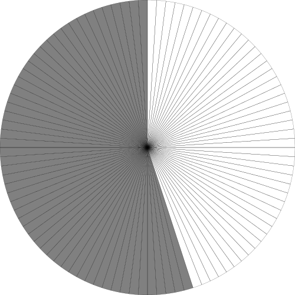
Similar to the sliced circle diagrams shown in the algorithm descriptions above, a number line may also be used to visualize the value that a number represents. It consists of a straight horizontal line with equidistant vertical notches spliced through out, where each notch is labelled with incrementally larger numbers from left-to-right...

The number being represented is marked on the line. For example, to represent the number 5...
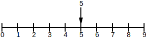
Numbers with fractional parts may also be marked on the line. Move the marker to the whole part of the number, then determine the amount of space that the fractional part consumes and move over that much towards the next notch. For example, to represent the number 5.5...

First, move the marker over to the whole: 5...
Then, determine how much space in the fractional part was consumed. 5.5's fractional part takes up half a circle, so it gets moved half way towards the next notch...
↩PREREQUISITES↩
Equality is the concept of checking if one number to see if it has the same value as another number. In other words, checking if both numbers are the same. For example, the numbers 5 and 5 are the same number, so they're said to be equal.
If you were to visualize both numbers on a number line, they would both sit at the same position...

Equality is typically represented using the infix operator = or ==. The above example would be represented as 5=5.
The output of an equality operation is either true or false: true when the numbers are the same and false when they aren't. For example, ...
When using words, equality is typically represented using the following syntax:
⚠️NOTE️️️⚠️
Not all of the above are bookmarked because there's too much ambiguity. For example, the word "is" is used in many contexts outside of addition.
⚠️NOTE️️️⚠️
If you know algebra, the word "gives" is applicable more so to algebra and beyond. For example: the addition of x and 1 gives 5 means x+1 = 5.
The opposite of equality is not equality. That is, not equality is the concept of checking if one number has a different number of items than another number. For example, the numbers 5 and 6 are different, so they're said to be not equal.
Not equality is typically represented using the infix operator ≠ or !=. The above example would be represented as 5≠6.
The output of a not equality operation is either true or false: true when the numbers are different and false when they're the same. For example, ...
When using words, not equality is typically represented using the following syntax:
⚠️NOTE️️️⚠️
Not all of the above are bookmarked because there's too much ambiguity. For example, the words "is not" is used in many contexts outside of addition.
⚠️NOTE️️️⚠️
Sometimes you may see the word inequality. This refers to operations that compare two numbers for something other than equality: greater than (>), less than (<), not equality (≠), and potentially others.
↩PREREQUISITES↩
Greater than is the concept of checking if one number represents more items than another number. For example, the number 8 has more items than the number 5, so 8 is said to be greater than 5.
If you were to visualize both numbers on a number line, the number 8 would be ahead of 5...

Greater than is typically represented using the infix operator >. The above example would be represented as 8>5.
The output of a greater than operation is either true or false: true when the first number has more items and false when it doesn't. For example, ...
When using words, greater than is typically represented using the following syntax:
Greater than or equal is common shorthand to compare if a number is greater than or equal to some other number. It's typically represented using the infix operator ≥ or >=. For example...
When using words, greater than or equal is typically represented using the following syntax:
⚠️NOTE️️️⚠️
Think of at least as "not less than" -- 8 is not less than 5. If you can follow the logic...
↩PREREQUISITES↩
Less than is the concept of checking if one number has fewer items than another number. For example, the number 5 has fewer items than the number 8, so 5 is said to be less than 8.
If you were to visualize both numbers on a number line, the number 5 would be behind of 8...
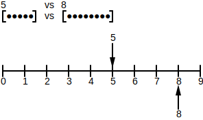
Less than is typically represented using the infix operator <. The above example would be represented as 5<8.
The output of a less than operation is either true or false: true when the first number has fewer items and false when it doesn't. For example, ...
When using words, less than is typically represented using the following syntax:
Less than or equal is common shorthand to compare if a number is less than or equal to some other number. It's typically represented using the infix operator ≤ or <=. For example...
When using words, less than or equal is typically represented using the following syntax:
⚠️NOTE️️️⚠️
Think of at most as "not more than" -- 5 is not more than 8. If you can follow the logic...
↩PREREQUISITES↩
Addition is the concept of taking two numbers and combining their values together. For example, combining 3 items and 5 items together results in 7 items...
[●●●] [●●●●●]
3 5
group values together
[●●●●●●●●]
7
Addition is typically represented using the infix operator +. The above example would be represented as 3+5.
The output of an addition operation is called the sum. In the example above, 7 is the sum.
When using words, addition is typically represented using the following syntax:
⚠️NOTE️️️⚠️
More than, larger than, and greater than are more much more commonly used for the greater than relational operator. For example...
You'll need to disambiguate based on the context.
Properties of addition:
Order in which 2 numbers are added doesn't matter (commutative).
[●●●] [●●●●●] results in [●●●●●●●●] (3+5 is 7)
3 5 7
[●●●●●] [●●●] results in [●●●●●●●●] (5+3 is 7)
5 3 7
Any number plus 0 results in the same number (identity).
[●●●] [] results in [●●●] (3+0 is 3)
3 0 3
[] [●●●] results in [●●●] (0+3 is 3)
0 3 3
↩PREREQUISITES↩
Subtraction is the concept of removing the value of one number from another number. For example, removing 3 items from 5 items results in 2 items...
[●●●●●]
5
pick out 3 from the 5
[●●] [●●●]
2 3
Subtraction is typically represented using the infix operator -. The above example would be represented as 5-3.
The output of an subtraction operation is called the difference. In the example above, 2 is the difference.
When using words, subtraction is typically represented using the following syntax:
⚠️NOTE️️️⚠️
Fewer than, smaller than, and less than are more much more commonly used for the less than relational operator. For example...
You'll need to disambiguate based on the context.
Properties of subtraction:
Any number subtracted by 0 results in the same number (identity).
[●●●] [] results in [●●●] (3+0 is 3)
3 0 3
⚠️NOTE️️️⚠️
Unlike addition, subtraction is not commutative. 5-3 isn't the same as 3-5
↩PREREQUISITES↩
Multiplication is the concept of taking a number and iteratively adding it to itself a certain number of iterations. For example, 3 added to itself for 5 iterations results in 15 items...
3+3+3+3+3=15
[●●●] 3
[●●●] 3
[●●●] 3
[●●●] 3
[●●●] 3
Multiplication is typically represented using the infix operator *. The above example would be represented as 3*5. When written in formal math notation, it may also be written as...
{kt} 3 \cdot 5{kt} 3(5){kt} (3)5⚠️NOTE️️️⚠️
Know algebra? Do not use x or a cross as a symbol for multiplication. It causes confusion for algebra expressions because x can also be a variable.
The output of a multiplication operation is called the product. In the example above, 15 is the product.
The inputs into the multiplication operation are either...
When using words, multiplication is typically represented using the following syntax:
⚠️NOTE️️️⚠️
There are certain special words that denote multiplication. For example, the word twice means 2 multiplied by something else -- e.g. twice 5 is the same thing as 2*5.
Much less common is the word thrice -- it means 3 times something else. The pattern here seems to be the add "ice" to the end of the number? Unsure, but Google seems to give a definition for fourice.
Properties of multiplication:
Order in which 2 numbers are multiplied doesn't matter (commutative).
3*5 vs 5*3
┌───┐ ┌┬┬┬┐
├●●●┤3 │●●●│
├●●●┤3 │●●●│
├●●●┤3 │●●●│
├●●●┤3 │●●●│
├●●●┤3 │●●●│
└───┘ └┴┴┴┘
555
the number of dots is the same
Any number multiplied by 0 is 0.
This makes sense if you think of multiplication as iterative addition...
var product = 0;
for (var i = 0; i < multiplicand; i++) {
product += multiplier;
}
If you iterate 0 times, the product will be 0.
Any number multiplied by 1 results in that same number (identity).
3*3=3+3+3
3*2=3+3
3*1=3 -- 3 is just by itself, it isn't being added
↩PREREQUISITES↩
Division is the concept of taking a number and iteratively subtracting it by another number to find out how many iterations it can be subtracted. For example, 15 can be subtracted by 3 exactly 5 iterations before nothing's left...
[●●●●●●●●●●●●●●●] start with 15
[●●●●●●●●●●●●] 15-3=12 (iteration 1)
[●●●●●●●●●] 12-3=9 (iteration 2)
[●●●●●●] 9-3=6 (iteration 3)
[●●●] 6-3=3 (iteration 4)
[] 3-3=0 (iteration 5)
Another way of thinking about division is that it's chopping up a number. Imagine cutting up a pie into 15 pieces and eating 3 pieces at a time. The pie will be done after you've eaten 5 times.


In certain cases, division may result in some remaining value that isn't large enough for another subtraction iteration to take place. This remaining value is called the remainder For example, 16 can be subtracted by 3 for 5 iterations but will have a remainder of 1...
[●●●●●●●●●●●●●●●●] start with 16
[●●●●●●●●●●●●●] 16-3=13 (iteration 1)
[●●●●●●●●●●] 13-3=10 (iteration 2)
[●●●●●●●] 10-3=7 (iteration 3)
[●●●●] 7-3=4 (iteration 4)
[●] 4-3=1 (iteration 5)
only 1 item left -- not enough for another subtraction iteration
1 is the remainder
Division is typically represented using the infix operator / or ÷. The above example would be represented as 15/3 or 15÷3. It may also be written as {kt} \frac{15}{3}, which is just a fancier way of writing 15/3.
The output of a division operation is called the quotient. In the example above, the quotient is 5 (it subtracts 5 times).
The inputs into the division operation are called the dividend and divisor. In the example above, 15 is the dividend and 3 is the divisor.
{kt} dividend \div divisor = quotient{kt} dividend / divisor = quotient{kt} \frac{dividend}{divisor} = quotient⚠️NOTE️️️⚠️
One way to think of this is that the dividend (the number on the left / top) is the starting value, and the divisor is the number being iteratively subtracted.
When using words, division is typically represented using the following syntax:
⚠️NOTE️️️⚠️
There are certain special words that denote division. For example, the word ...
Properties of division:
Any number divided by 1 results in the same number (identity).
[●●●●●] start with 5
[●●●●] 5-1=4 (iteration 1)
[●●●] 4-1=3 (iteration 2)
[●●] 3-1=2 (iteration 3)
[●] 2-1=1 (iteration 4)
[] 1-1=0 (iteration 5)
5 iterations total
Any number divided by itself is 1.
[●●●●●] start with 5
[] 5-5=0 (iteration 1)
1 iteration total
Any number divided by 0 is infinity.
This makes sense if you think of division as iterative subtraction...
quotient = 0
while dividend >= divisor:
dividend -= divisor
quotient += 1
This will iterate forever if the divisor is 0 because the dividend would never become less than the divisor -- the loop wouldn't terminate.
⚠️NOTE️️️⚠️
Another way to think of this is that division is the inverse of multiplication (it undoes multiplication). If it were the case that 10/0=?, then ?*0=10. We know that this can't be the case because ?*0=0.
↩PREREQUISITES↩

Whole numbers are numbers which have no fractional part -- they only consist of wholes. For example, 5, 0, 104, and 27 are whole numbers while 4.2 is not.
The difference between whole numbers and natural / counting / cardinal numbers is that counting numbers don't include 0 (they start at 1). That is, counting numbers start where you start counting / where something exists. For example, if you're counting apples, you start counting at 1 -- there needs to be at least 1 apple to start.
↩PREREQUISITES↩
The algorithm used by humans to test for whole number equality relies on two idea...
If two whole numbers are equal then they must have the same number of digits. For example, 55 and 9123456 aren't equal because the number of digits between them isn't the same -- 55 has 2 digits while 9123456 has 7 digits.
Numbers represented in place-value notation can be broken down into single digit components -- the place of each digit in the number represents some portion of that number's value. For example, the number 935 can be broken down as 9 100s, 3 10s, and 5 1s...
100
100
100
100
100 1
100 1
100 10 1
100 10 1
100 10 1
--- -- -
900 30 5
9 3 5
│ │ │
│ │ └─ ●
│ │ ●
│ │ ●
│ │ ●
│ │ ●
│ │
│ └─── ●●●●●●●●●●
│ ●●●●●●●●●●
│ ●●●●●●●●●●
│
└───── ●●●●●●●●●●●●●●●●●●●●●●●●●●●●●●●●●●●●●●●●●●●●●●●●●●●●●●●●●●●●●●●●●●●●●●●●●●●●●●●●●●●●●●●●●●●●●●●●●●●●
●●●●●●●●●●●●●●●●●●●●●●●●●●●●●●●●●●●●●●●●●●●●●●●●●●●●●●●●●●●●●●●●●●●●●●●●●●●●●●●●●●●●●●●●●●●●●●●●●●●●
●●●●●●●●●●●●●●●●●●●●●●●●●●●●●●●●●●●●●●●●●●●●●●●●●●●●●●●●●●●●●●●●●●●●●●●●●●●●●●●●●●●●●●●●●●●●●●●●●●●●
●●●●●●●●●●●●●●●●●●●●●●●●●●●●●●●●●●●●●●●●●●●●●●●●●●●●●●●●●●●●●●●●●●●●●●●●●●●●●●●●●●●●●●●●●●●●●●●●●●●●
●●●●●●●●●●●●●●●●●●●●●●●●●●●●●●●●●●●●●●●●●●●●●●●●●●●●●●●●●●●●●●●●●●●●●●●●●●●●●●●●●●●●●●●●●●●●●●●●●●●●
●●●●●●●●●●●●●●●●●●●●●●●●●●●●●●●●●●●●●●●●●●●●●●●●●●●●●●●●●●●●●●●●●●●●●●●●●●●●●●●●●●●●●●●●●●●●●●●●●●●●
●●●●●●●●●●●●●●●●●●●●●●●●●●●●●●●●●●●●●●●●●●●●●●●●●●●●●●●●●●●●●●●●●●●●●●●●●●●●●●●●●●●●●●●●●●●●●●●●●●●●
●●●●●●●●●●●●●●●●●●●●●●●●●●●●●●●●●●●●●●●●●●●●●●●●●●●●●●●●●●●●●●●●●●●●●●●●●●●●●●●●●●●●●●●●●●●●●●●●●●●●
●●●●●●●●●●●●●●●●●●●●●●●●●●●●●●●●●●●●●●●●●●●●●●●●●●●●●●●●●●●●●●●●●●●●●●●●●●●●●●●●●●●●●●●●●●●●●●●●●●●●
Since the numbers being tested for equality must have the same number of digits between them, the first test to see if they may be equal is to a ensure that the number of digits are equal (idea 1). For example, 55 has 2 digits while 9123456 has 7 digits -- there's no point in going any further because if the number of digits aren't the same then there's no way for the actual numbers to be the same.
If it turns out that the number of digits are the same, then each place's digit is tested for equality (idea 2). If all the digits are equal, then the numbers are equal. For example, the numbers 195 and 195 are equal...
1 9 5
| | |
1 9 5
... while the numbers 175 and 195 are not equal...
1 7 5
| x |
1 9 5
The way to perform this algorithm via code is as follows...
arithmetic_code/WholeNumber.py
python
#MARKDOWN_EQ\s*\n([\s\S]+)\n\s*#MARKDOWN_EQ
⚠️NOTE️️️⚠️
The code is making use of python lists to do the 2 tests above. Python's list equality already applies ideas 1 and 2 internally to determine if the contents of the list are equal.
↩PREREQUISITES↩
The algorithm used by humans to test for whole number less than relies on the idea that numbers represented in place-value notation can be broken down into single digit components -- the place of each digit in the number represents some portion of that number's value. For example, the number 935 can be broken down as 9 100s, 3 10s, and 5 1s...
100
100
100
100
100 1
100 1
100 10 1
100 10 1
100 10 1
--- -- -
900 30 5
9 3 5
│ │ │
│ │ └─ ●
│ │ ●
│ │ ●
│ │ ●
│ │ ●
│ │
│ └─── ●●●●●●●●●●
│ ●●●●●●●●●●
│ ●●●●●●●●●●
│
└───── ●●●●●●●●●●●●●●●●●●●●●●●●●●●●●●●●●●●●●●●●●●●●●●●●●●●●●●●●●●●●●●●●●●●●●●●●●●●●●●●●●●●●●●●●●●●●●●●●●●●●
●●●●●●●●●●●●●●●●●●●●●●●●●●●●●●●●●●●●●●●●●●●●●●●●●●●●●●●●●●●●●●●●●●●●●●●●●●●●●●●●●●●●●●●●●●●●●●●●●●●●
●●●●●●●●●●●●●●●●●●●●●●●●●●●●●●●●●●●●●●●●●●●●●●●●●●●●●●●●●●●●●●●●●●●●●●●●●●●●●●●●●●●●●●●●●●●●●●●●●●●●
●●●●●●●●●●●●●●●●●●●●●●●●●●●●●●●●●●●●●●●●●●●●●●●●●●●●●●●●●●●●●●●●●●●●●●●●●●●●●●●●●●●●●●●●●●●●●●●●●●●●
●●●●●●●●●●●●●●●●●●●●●●●●●●●●●●●●●●●●●●●●●●●●●●●●●●●●●●●●●●●●●●●●●●●●●●●●●●●●●●●●●●●●●●●●●●●●●●●●●●●●
●●●●●●●●●●●●●●●●●●●●●●●●●●●●●●●●●●●●●●●●●●●●●●●●●●●●●●●●●●●●●●●●●●●●●●●●●●●●●●●●●●●●●●●●●●●●●●●●●●●●
●●●●●●●●●●●●●●●●●●●●●●●●●●●●●●●●●●●●●●●●●●●●●●●●●●●●●●●●●●●●●●●●●●●●●●●●●●●●●●●●●●●●●●●●●●●●●●●●●●●●
●●●●●●●●●●●●●●●●●●●●●●●●●●●●●●●●●●●●●●●●●●●●●●●●●●●●●●●●●●●●●●●●●●●●●●●●●●●●●●●●●●●●●●●●●●●●●●●●●●●●
●●●●●●●●●●●●●●●●●●●●●●●●●●●●●●●●●●●●●●●●●●●●●●●●●●●●●●●●●●●●●●●●●●●●●●●●●●●●●●●●●●●●●●●●●●●●●●●●●●●●
Since a number can be broken down into single digit components, each single digit component from the numbers being compared can individually tested from most significant to least significant (left-to-right). If a digit from the number being tested is...
If no more digits are remaining for testing, the number being tested is equal.
For example, imagine testing the number 23 and 21...
2 3 2 1
│ │ │ │
│ └─ ● │ └─ ●
│ ● │
│ ● └─── ●●●●●●●●●●
│ ●●●●●●●●●●
└─── ●●●●●●●●●●
●●●●●●●●●●
The first digits are equal (2 == 2), so move to the next digit. The next digit is larger than the other digit (3 > 1), so 23 is not less than 21.
⚠️NOTE️️️⚠️
What happens when the number of digits aren't the same between the numbers being tested (e.g. 55 and 12345)? Recall how place-value notation works. 0 can be used when a corresponding digit doesn't exist at some position.
The way to perform this algorithm via code is as follows...
arithmetic_code/WholeNumber.py
python
#MARKDOWN_LT\s*\n([\s\S]+)\n\s*#MARKDOWN_LT
↩PREREQUISITES↩
The algorithm used by humans to test for whole number greater than relies on the idea that numbers represented in place-value notation can be broken down into single digit components -- the place of each digit in the number represents some portion of that number's value. For example, the number 935 can be broken down as 9 100s, 3 10s, and 5 1s...
100
100
100
100
100 1
100 1
100 10 1
100 10 1
100 10 1
--- -- -
900 30 5
9 3 5
│ │ │
│ │ └─ ●
│ │ ●
│ │ ●
│ │ ●
│ │ ●
│ │
│ └─── ●●●●●●●●●●
│ ●●●●●●●●●●
│ ●●●●●●●●●●
│
└───── ●●●●●●●●●●●●●●●●●●●●●●●●●●●●●●●●●●●●●●●●●●●●●●●●●●●●●●●●●●●●●●●●●●●●●●●●●●●●●●●●●●●●●●●●●●●●●●●●●●●●
●●●●●●●●●●●●●●●●●●●●●●●●●●●●●●●●●●●●●●●●●●●●●●●●●●●●●●●●●●●●●●●●●●●●●●●●●●●●●●●●●●●●●●●●●●●●●●●●●●●●
●●●●●●●●●●●●●●●●●●●●●●●●●●●●●●●●●●●●●●●●●●●●●●●●●●●●●●●●●●●●●●●●●●●●●●●●●●●●●●●●●●●●●●●●●●●●●●●●●●●●
●●●●●●●●●●●●●●●●●●●●●●●●●●●●●●●●●●●●●●●●●●●●●●●●●●●●●●●●●●●●●●●●●●●●●●●●●●●●●●●●●●●●●●●●●●●●●●●●●●●●
●●●●●●●●●●●●●●●●●●●●●●●●●●●●●●●●●●●●●●●●●●●●●●●●●●●●●●●●●●●●●●●●●●●●●●●●●●●●●●●●●●●●●●●●●●●●●●●●●●●●
●●●●●●●●●●●●●●●●●●●●●●●●●●●●●●●●●●●●●●●●●●●●●●●●●●●●●●●●●●●●●●●●●●●●●●●●●●●●●●●●●●●●●●●●●●●●●●●●●●●●
●●●●●●●●●●●●●●●●●●●●●●●●●●●●●●●●●●●●●●●●●●●●●●●●●●●●●●●●●●●●●●●●●●●●●●●●●●●●●●●●●●●●●●●●●●●●●●●●●●●●
●●●●●●●●●●●●●●●●●●●●●●●●●●●●●●●●●●●●●●●●●●●●●●●●●●●●●●●●●●●●●●●●●●●●●●●●●●●●●●●●●●●●●●●●●●●●●●●●●●●●
●●●●●●●●●●●●●●●●●●●●●●●●●●●●●●●●●●●●●●●●●●●●●●●●●●●●●●●●●●●●●●●●●●●●●●●●●●●●●●●●●●●●●●●●●●●●●●●●●●●●
Since a number can be broken down into single digit components, each single digit component from the numbers being compared can individually tested from most significant to least significant (left-to-right). If a digit from the number being tested is...
If no more digits are remaining for testing, the number being tested is equal.
For example, imagine testing the number 23 and 21...
2 3 2 1
│ │ │ │
│ └─ ● │ └─ ●
│ ● │
│ ● └─── ●●●●●●●●●●
│ ●●●●●●●●●●
└─── ●●●●●●●●●●
●●●●●●●●●●
The first digits are equal (2 == 2), so move to the next digit. The next digit is larger than the other digit (3 > 1), so 23 is greater than than 21.
⚠️NOTE️️️⚠️
What happens when the number of digits aren't the same between the numbers being tested (e.g. 55 and 12345)? Recall how place-value notation works. 0 can be used when a corresponding digit doesn't exist at some position.
The way to perform this algorithm via code is as follows...
arithmetic_code/WholeNumber.py
python
#MARKDOWN_GT\s*\n([\s\S]+)\n\s*#MARKDOWN_GT
↩PREREQUISITES↩
The algorithm used by humans to add large whole numbers together is called vertical addition. Vertical addition relies on two ideas...
Humans can easily add a single digit number to another single digit number without much effort. For example...
... are all addition operations that don't take much effort / are already probably cached in person's memory.
Numbers represented in place-value notation can be broken down into single digit components -- the place of each digit in the number represents some portion of that number's value. For example, the number 935 can be broken down as 9 100s, 3 10s, and 5 1s...
100
100
100
100
100 1
100 1
100 10 1
100 10 1
100 10 1
--- -- -
900 30 5
9 3 5
│ │ │
│ │ └─ ●
│ │ ●
│ │ ●
│ │ ●
│ │ ●
│ │
│ └─── ●●●●●●●●●●
│ ●●●●●●●●●●
│ ●●●●●●●●●●
│
└───── ●●●●●●●●●●●●●●●●●●●●●●●●●●●●●●●●●●●●●●●●●●●●●●●●●●●●●●●●●●●●●●●●●●●●●●●●●●●●●●●●●●●●●●●●●●●●●●●●●●●●
●●●●●●●●●●●●●●●●●●●●●●●●●●●●●●●●●●●●●●●●●●●●●●●●●●●●●●●●●●●●●●●●●●●●●●●●●●●●●●●●●●●●●●●●●●●●●●●●●●●●
●●●●●●●●●●●●●●●●●●●●●●●●●●●●●●●●●●●●●●●●●●●●●●●●●●●●●●●●●●●●●●●●●●●●●●●●●●●●●●●●●●●●●●●●●●●●●●●●●●●●
●●●●●●●●●●●●●●●●●●●●●●●●●●●●●●●●●●●●●●●●●●●●●●●●●●●●●●●●●●●●●●●●●●●●●●●●●●●●●●●●●●●●●●●●●●●●●●●●●●●●
●●●●●●●●●●●●●●●●●●●●●●●●●●●●●●●●●●●●●●●●●●●●●●●●●●●●●●●●●●●●●●●●●●●●●●●●●●●●●●●●●●●●●●●●●●●●●●●●●●●●
●●●●●●●●●●●●●●●●●●●●●●●●●●●●●●●●●●●●●●●●●●●●●●●●●●●●●●●●●●●●●●●●●●●●●●●●●●●●●●●●●●●●●●●●●●●●●●●●●●●●
●●●●●●●●●●●●●●●●●●●●●●●●●●●●●●●●●●●●●●●●●●●●●●●●●●●●●●●●●●●●●●●●●●●●●●●●●●●●●●●●●●●●●●●●●●●●●●●●●●●●
●●●●●●●●●●●●●●●●●●●●●●●●●●●●●●●●●●●●●●●●●●●●●●●●●●●●●●●●●●●●●●●●●●●●●●●●●●●●●●●●●●●●●●●●●●●●●●●●●●●●
●●●●●●●●●●●●●●●●●●●●●●●●●●●●●●●●●●●●●●●●●●●●●●●●●●●●●●●●●●●●●●●●●●●●●●●●●●●●●●●●●●●●●●●●●●●●●●●●●●●●
Since a number can be broken down into single digit components and adding a single digit to any number is easy, any two numbers can be added by adding their individual single digit components. For example, the number 53 and 21 are broken down as follows...
5 3 2 1
│ │ │ │
│ └─ ● │ └─ ●
│ ● │
│ ● └─── ●●●●●●●●●●
│ ●●●●●●●●●●
└─── ●●●●●●●●●●
●●●●●●●●●●
●●●●●●●●●●
●●●●●●●●●●
●●●●●●●●●●
Add their individual single digit components together to get the sum. The ...
7 4
│ │
│ └─ ●
│ ●
│ ●
│ ●
│
└─── ●●●●●●●●●●
●●●●●●●●●●
●●●●●●●●●●
●●●●●●●●●●
●●●●●●●●●●
●●●●●●●●●●
●●●●●●●●●●
In certain cases, the addition of two single digit components may bleed over to the next single digit component. For example, adding 93 and 21 can be broken down as follows...
Combining the 10s place resulted in a bleed over to the hundreds place. This extra 100s place bleed over digit can be carried over and combined into the hundreds place. This process is called carry-over -- you're carrying-over the extra bleed over digit to its correct place and combining it with whatever else is there.
Conceptually, carrying-over is the idea of breaking out a group of 10 from the current place and moving them over to the next highest place (e.g. 10s place to 100s place). For example, when adding 93 to 21, adding the digits at the 10's place (90+20) results in 110...
9 3 2 1
│ │ │ │
│ └─ ● │ └─ ●
│ ● │
│ ● └─── ●●●●●●●●●●
│ ●●●●●●●●●●
└─── ●●●●●●●●●●
●●●●●●●●●●
●●●●●●●●●●
●●●●●●●●●●
●●●●●●●●●●
●●●●●●●●●●
●●●●●●●●●●
●●●●●●●●●●
●●●●●●●●●●
results in
11 4
│ │
│ └─ ●
│ ●
│ ●
│ ●
│
└─── ●●●●●●●●●●
●●●●●●●●●●
●●●●●●●●●●
●●●●●●●●●●
●●●●●●●●●●
●●●●●●●●●●
●●●●●●●●●●
●●●●●●●●●●
●●●●●●●●●●
●●●●●●●●●●
●●●●●●●●●●
Since 11 is too many digits for the tens place (each place must only have 1 digit), break out 10 groups from the 10s place and move those over to the 100s place...
11 4
│ │
│ └─ ●
│ ●
│ ●
│ ●
│
└─── ●●●●●●●●●●
┌──────────┐
│●●●●●●●●●●│
│●●●●●●●●●●│ each group is 10 items and we grabbed 10 of them (that's 100 items total)
│●●●●●●●●●●│
│●●●●●●●●●●│
│●●●●●●●●●●│
│●●●●●●●●●●│
│●●●●●●●●●●│
│●●●●●●●●●●│
│●●●●●●●●●●│
│●●●●●●●●●●│
└──────────┘
move those 100 items as 1 group of 100s
1 1 4
│ │ │
│ │ └─ ●
│ │ ●
│ │ ●
│ │ ●
│ │
│ └─── ●●●●●●●●●●
│ ┌────────────────────────────────────────────────────────────────────────────────────────────────────┐
└─────│●●●●●●●●●●●●●●●●●●●●●●●●●●●●●●●●●●●●●●●●●●●●●●●●●●●●●●●●●●●●●●●●●●●●●●●●●●●●●●●●●●●●●●●●●●●●●●●●●●●●│
└────────────────────────────────────────────────────────────────────────────────────────────────────┘
The digit in the 10s place is the result for the 10s place, while the digit in the 100s place gets combined in with the 100s place. In the above example, the 100s place was empty, so the carry-over remained as-is.
The way to perform this algorithm in real-life is to stack the two numbers being added on top of each other, where the positions for both numbers match up (e.g. the 1s position matches up, the 10s position matches up, the 100s position matched up, etc..). Then, add the individual single digit components together (from right-to-left). For example...
{kt}\begin{alignedat}{3}{1}& \enspace{5}& \enspace{3}& \\{ }& \enspace{2}& \enspace{1}& \enspace + \\ \hline{1}& \enspace{7}& \enspace{4}&\end{alignedat}
⚠️NOTE️️️⚠️
The number 21 has nothing in its 100s place -- nothing is the same as 0. 21 is the same as 021.
If 2 individual single digit components combine together to results in an extra digit (e.g. 5+8=13), the bleed over digit is carried over to the next position (on the left). This is denoted by stacking the bleed over digit on top of the next position -- it's being combined along with the other digits at that position. For example...
{kt}\begin{alignedat}{3}{1}& \enspace{ }& \enspace{ }& \\{5}& \enspace{5}& \enspace{1}& \\{ }& \enspace{8}& \enspace{1}& \enspace + \\ \hline{6}& \enspace{3}& \enspace{2}&\end{alignedat}
The way to perform this algorithm via code is as follows...
arithmetic_code/WholeNumber.py
python
#MARKDOWN_ADD\s*\n([\s\S]+)\n\s*#MARKDOWN_ADD
↩PREREQUISITES↩
The algorithm used by humans to subtract large whole numbers from each other is called vertical subtraction. Vertical subtraction relies on two ideas...
Humans can easily subtract a small 1 to 2 digit numbers (anything smaller than 20) from each other without much effort. For example...
... are all subtraction operations that don't take much effort / are already probably cached in person's memory.
Numbers represented in place-value notation can be broken down into single digit components -- the place of each digit in the number represents some portion of that number's value. For example, the number 935 can be broken down as 9 100s, 3 10s, and 5 1s...
100
100
100
100
100 1
100 1
100 10 1
100 10 1
100 10 1
--- -- -
900 30 5
9 3 5
│ │ │
│ │ └─ ●
│ │ ●
│ │ ●
│ │ ●
│ │ ●
│ │
│ └─── ●●●●●●●●●●
│ ●●●●●●●●●●
│ ●●●●●●●●●●
│
└───── ●●●●●●●●●●●●●●●●●●●●●●●●●●●●●●●●●●●●●●●●●●●●●●●●●●●●●●●●●●●●●●●●●●●●●●●●●●●●●●●●●●●●●●●●●●●●●●●●●●●●
●●●●●●●●●●●●●●●●●●●●●●●●●●●●●●●●●●●●●●●●●●●●●●●●●●●●●●●●●●●●●●●●●●●●●●●●●●●●●●●●●●●●●●●●●●●●●●●●●●●●
●●●●●●●●●●●●●●●●●●●●●●●●●●●●●●●●●●●●●●●●●●●●●●●●●●●●●●●●●●●●●●●●●●●●●●●●●●●●●●●●●●●●●●●●●●●●●●●●●●●●
●●●●●●●●●●●●●●●●●●●●●●●●●●●●●●●●●●●●●●●●●●●●●●●●●●●●●●●●●●●●●●●●●●●●●●●●●●●●●●●●●●●●●●●●●●●●●●●●●●●●
●●●●●●●●●●●●●●●●●●●●●●●●●●●●●●●●●●●●●●●●●●●●●●●●●●●●●●●●●●●●●●●●●●●●●●●●●●●●●●●●●●●●●●●●●●●●●●●●●●●●
●●●●●●●●●●●●●●●●●●●●●●●●●●●●●●●●●●●●●●●●●●●●●●●●●●●●●●●●●●●●●●●●●●●●●●●●●●●●●●●●●●●●●●●●●●●●●●●●●●●●
●●●●●●●●●●●●●●●●●●●●●●●●●●●●●●●●●●●●●●●●●●●●●●●●●●●●●●●●●●●●●●●●●●●●●●●●●●●●●●●●●●●●●●●●●●●●●●●●●●●●
●●●●●●●●●●●●●●●●●●●●●●●●●●●●●●●●●●●●●●●●●●●●●●●●●●●●●●●●●●●●●●●●●●●●●●●●●●●●●●●●●●●●●●●●●●●●●●●●●●●●
●●●●●●●●●●●●●●●●●●●●●●●●●●●●●●●●●●●●●●●●●●●●●●●●●●●●●●●●●●●●●●●●●●●●●●●●●●●●●●●●●●●●●●●●●●●●●●●●●●●●
Since a number can be broken down into single digit components and subtracting a single digit to any number is easy, any two numbers can be subtracted by subtracting their individual single digit components. For example, the number 53 and 21 are broken down as follows...
5 3 2 1
│ │ │ │
│ └─ ● │ └─ ●
│ ● │
│ ● └─── ●●●●●●●●●●
│ ●●●●●●●●●●
└─── ●●●●●●●●●●
●●●●●●●●●●
●●●●●●●●●●
●●●●●●●●●●
●●●●●●●●●●
Subtract their individual single digit components from each other to get the difference. The ...
3 2
│ │
│ └─ ●
│ ●
│
└─── ●●●●●●●●●●
●●●●●●●●●●
●●●●●●●●●●
In certain cases, the subtraction of two single digit components may not be possible. For example, subtracting 91 and 23...
9 1 2 3
│ │ │ │
│ └─ ● │ └─ ●
│ │ ●
└─── ●●●●●●●●●● │ ●
●●●●●●●●●● │
●●●●●●●●●● └─── ●●●●●●●●●●
●●●●●●●●●● ●●●●●●●●●●
●●●●●●●●●●
●●●●●●●●●●
●●●●●●●●●●
●●●●●●●●●●
●●●●●●●●●●
The ...
The algorithm fails at the 1s place. It's impossible to remove 3 items from 1 item -- the most that can be removed from 1 item is 1 item. The way to handle this is to pick out 1 group from the 10s place and mover it over back to 1s place...
9 1 2 3
│ │ │ │
│ └─ ● │ └─ ●
│ │ ●
└─── ●●●●●●●●●● │ ●
●●●●●●●●●● │
●●●●●●●●●● └─── ●●●●●●●●●●
●●●●●●●●●● ●●●●●●●●●●
●●●●●●●●●●
●●●●●●●●●●
●●●●●●●●●●
●●●●●●●●●●
┌──────────┐
│●●●●●●●●●●│ each group is 10 items and we grabbed 1 of them (that's 10 items total)
└──────────┘
move those items back to the 1s place
8 11 2 3
│ │ │ │
│ └─ ● │ └─ ●
| ┌─┐ │ ●
│ │●│ │ ●
│ │●│ │
│ │●│ └─── ●●●●●●●●●●
│ │●│ ●●●●●●●●●●
│ │●│
│ │●│
│ │●│
│ │●│
│ │●│
│ │●│
│ └─┘
│
└─── ●●●●●●●●●●
●●●●●●●●●●
●●●●●●●●●●
●●●●●●●●●●
●●●●●●●●●●
●●●●●●●●●●
●●●●●●●●●●
●●●●●●●●●●
Now it's possible to subtract. The ...
This process is called borrowing -- you're borrowing 1 group from the next largest position and moving those items back so that there's enough for subtraction to take place. In total, the value is still the same -- the total number of items (dots) doesn't change, but the items are being moved around so that the subtraction of a component can happen.
In certain cases, a group may need to be borrowed but the next largest position is 0. For example, subtracting 100 and 11...
1 0 0 1 1
│ │ │ │ │
│ │ └─ ● │ └─ ●
│ │ │
│ └─── <empty> └─── ●●●●●●●●●●
│
└───── ●●●●●●●●●●●●●●●●●●●●●●●●●●●●●●●●●●●●●●●●●●●●●●●●●●●●●●●●●●●●●●●●●●●●●●●●●●●●●●●●●●●●●●●●●●●●●●●●●●●●
Borrow recursively to handle this case:
subtract 1s position: 0-1 not possible, borrow from 10s position
borrow from 10s position: can't borrow 10s position is 0, borrow from 100s position
borrow from 100s position: 100s position changes from 1 to 0
1 0 0 1 1
│ │ │ │ │
│ │ └─ ● │ └─ ●
│ │ │
│ └─── <empty> └─── ●●●●●●●●●●
│ ┌────────────────────────────────────────────────────────────────────────────────────────────────────┐
└─────│●●●●●●●●●●●●●●●●●●●●●●●●●●●●●●●●●●●●●●●●●●●●●●●●●●●●●●●●●●●●●●●●●●●●●●●●●●●●●●●●●●●●●●●●●●●●●●●●●●●●│
└────────────────────────────────────────────────────────────────────────────────────────────────────┘
move those items back to the 10s place (1 group in 100s becomes 10 groups in the 10s)
0 10 0 1 1
│ │ │ │ │
│ │ └─ ● │ └─ ●
│ │ │
│ └───┌──────────┐ └─── ●●●●●●●●●●
│ │●●●●●●●●●●│
│ │●●●●●●●●●●│
│ │●●●●●●●●●●│
│ │●●●●●●●●●●│
│ │●●●●●●●●●●│
│ │●●●●●●●●●●│
│ │●●●●●●●●●●│
│ │●●●●●●●●●●│
│ │●●●●●●●●●●│
│ │●●●●●●●●●●│
│ └──────────┘
│
└───── <empty>
borrow from 10s position: 10s position changes from 10 to 9
0 10 0 1 1
│ │ │ │ │
│ │ └─ ● │ └─ ●
│ │ │
│ └─── ●●●●●●●●●● └─── ●●●●●●●●●●
│ ●●●●●●●●●●
│ ●●●●●●●●●●
│ ●●●●●●●●●●
│ ●●●●●●●●●●
│ ●●●●●●●●●●
│ ●●●●●●●●●●
│ ●●●●●●●●●●
│ ●●●●●●●●●●
│ ┌──────────┐
| │●●●●●●●●●●│
│ └──────────┘
│
└───── <empty>
move those items back to the 1s place (1 group in 10s becomes 10 items in the 1s)
0 9 10 1 1
│ │ │ │ │
│ │ └─┌─┐ │ └─ ●
│ │ │●│ │
│ │ │●│ └─── ●●●●●●●●●●
│ │ │●│
│ │ │●│
│ │ │●│
│ │ │●│
│ │ │●│
│ │ │●│
│ │ │●│
│ │ │●│
│ │ └─┘
│ └─── ●●●●●●●●●●
│ ●●●●●●●●●●
│ ●●●●●●●●●●
│ ●●●●●●●●●●
│ ●●●●●●●●●●
│ ●●●●●●●●●●
│ ●●●●●●●●●●
│ ●●●●●●●●●●
│ ●●●●●●●●●●
│
└───── <empty>
subtract 1s position: 10-1 results in 9
subtract 10s position: 9-1 results in 8
subtract 100s position: 0-0 results in 0 (why? because 11 is the same as 011)
The way to perform this algorithm in real-life is to stack the two numbers being subtracted on top of each other, where the positions for both numbers match up (e.g. the 1s position matches up, the 10s position matches up, the 100s position matched up, etc..). Then, subtract the individual single digit components together (from right-to-left). Every time borrowing is needed, cross out the number being changed and put the place their new numbers above. For example, subtracting 100 and 11 ...
{kt}\begin{alignedat}{3}{1}& \enspace{0}& \enspace{0}& \\{ }& \enspace{1}& \enspace{1}& \enspace - \\ \hline{ }& \enspace{ }& \enspace{ }&\end{alignedat}
subtract 1s position: 0-1 not possible, borrow from 10s position
borrow from 10s position: can't borrow 10s position is 0, borrow from 100s position
borrow from 100s position: 100s position subtracts 1 (goes from 1 to 0), 10s position adds 10 (goes from 0 to 10)
{kt}\begin{alignedat}{3}{0}& \enspace{10}& \enspace{ }& \\\cancel{1}& \enspace\cancel{ 0}& \enspace{0}& \\{ }& \enspace{ 1}& \enspace{1}& \enspace - \\ \hline{ }& \enspace{ }& \enspace{ }&\end{alignedat}
borrow from 10s position: 10s subtracts 1 (goes from 10 to 9), 1s position adds 10 (goes from 0 to 10)
{kt}\begin{alignedat}{3}{ }& \enspace{ 9}& \enspace{ }& \\{0}& \enspace\cancel{10}& \enspace{10}& \\\cancel{1}& \enspace\cancel{ 0}& \enspace\cancel{ 0}& \\{ }& \enspace{ 1}& \enspace{ 1}& \enspace - \\ \hline{ }& \enspace{ }& \enspace{ }&\end{alignedat}
subtract 1s position: 10-1 results in 9
{kt}\begin{alignedat}{3}{ }& \enspace{ 9}& \enspace{ }& \\{0}& \enspace\cancel{10}& \enspace{10}& \\\cancel{1}& \enspace\cancel{ 0}& \enspace\cancel{ 0}& \\{ }& \enspace{ 1}& \enspace{ 1}& \enspace - \\ \hline{ }& \enspace{ }& \enspace{ 9}&\end{alignedat}
subtract 10s position: 9-1 results in 8
{kt}\begin{alignedat}{3}{ }& \enspace{ 9}& \enspace{ }& \\{0}& \enspace\cancel{10}& \enspace{10}& \\\cancel{1}& \enspace\cancel{ 0}& \enspace\cancel{ 0}& \\{ }& \enspace{ 1}& \enspace{ 1}& \enspace - \\ \hline{ }& \enspace{ 8}& \enspace{ 9}&\end{alignedat}
subtract 100s position: 0-0 results in 0
{kt}\begin{alignedat}{3}{ }& \enspace{ 9}& \enspace{ }& \\{0}& \enspace\cancel{10}& \enspace{10}& \\\cancel{1}& \enspace\cancel{ 0}& \enspace\cancel{ 0}& \\{ }& \enspace{ 1}& \enspace{ 1}& \enspace - \\ \hline{0}& \enspace{ 8}& \enspace{ 9}&\end{alignedat}
⚠️NOTE️️️⚠️
The number 11 has nothing in its 100s place -- nothing is the same as 0. 11 is the same as 011.
The way to perform this algorithm via code is as follows...
arithmetic_code/WholeNumber.py
python
#MARKDOWN_SUB\s*\n([\s\S]+)\n\s*#MARKDOWN_SUB
↩PREREQUISITES↩
The algorithm used by humans to multiply large whole numbers together is called vertical multiplication. Vertical multiplication relies on three ideas...
Humans have the ability to multiply a single digit number to another single digit number through memorization. For example...
... are all multiplication operations that can be done quickly if the person has cached the table below into their memory.
| * | 0 | 1 | 2 | 3 | 4 | 5 | 6 | 7 | 8 | 9 |
|---|---|---|---|---|---|---|---|---|---|---|
| 0 | 0 | 0 | 0 | 0 | 0 | 0 | 0 | 0 | 0 | 0 |
| 1 | 0 | 1 | 2 | 3 | 4 | 5 | 6 | 7 | 8 | 9 |
| 2 | 0 | 2 | 4 | 6 | 8 | 10 | 12 | 14 | 16 | 18 |
| 3 | 0 | 3 | 6 | 9 | 12 | 15 | 18 | 21 | 24 | 27 |
| 4 | 0 | 4 | 8 | 12 | 15 | 20 | 24 | 28 | 32 | 36 |
| 5 | 0 | 5 | 10 | 15 | 20 | 25 | 30 | 35 | 40 | 45 |
| 6 | 0 | 6 | 12 | 18 | 24 | 30 | 36 | 42 | 48 | 54 |
| 7 | 0 | 7 | 14 | 21 | 28 | 35 | 42 | 49 | 56 | 63 |
| 8 | 0 | 8 | 16 | 24 | 32 | 40 | 48 | 56 | 64 | 72 |
| 9 | 0 | 9 | 18 | 27 | 36 | 45 | 54 | 63 | 72 | 81 |
Numbers represented in place-value notation can be broken down into single digit components -- the place of each digit in the number represents some portion of that number's value. For example, the number 935 can be broken down as 9 100s, 3 10s, and 5 1s...
100
100
100
100
100 1
100 1
100 10 1
100 10 1
100 10 1
--- -- -
900 30 5
9 3 5
│ │ │
│ │ └─ ●
│ │ ●
│ │ ●
│ │ ●
│ │ ●
│ │
│ └─── ●●●●●●●●●●
│ ●●●●●●●●●●
│ ●●●●●●●●●●
│
└───── ●●●●●●●●●●●●●●●●●●●●●●●●●●●●●●●●●●●●●●●●●●●●●●●●●●●●●●●●●●●●●●●●●●●●●●●●●●●●●●●●●●●●●●●●●●●●●●●●●●●●
●●●●●●●●●●●●●●●●●●●●●●●●●●●●●●●●●●●●●●●●●●●●●●●●●●●●●●●●●●●●●●●●●●●●●●●●●●●●●●●●●●●●●●●●●●●●●●●●●●●●
●●●●●●●●●●●●●●●●●●●●●●●●●●●●●●●●●●●●●●●●●●●●●●●●●●●●●●●●●●●●●●●●●●●●●●●●●●●●●●●●●●●●●●●●●●●●●●●●●●●●
●●●●●●●●●●●●●●●●●●●●●●●●●●●●●●●●●●●●●●●●●●●●●●●●●●●●●●●●●●●●●●●●●●●●●●●●●●●●●●●●●●●●●●●●●●●●●●●●●●●●
●●●●●●●●●●●●●●●●●●●●●●●●●●●●●●●●●●●●●●●●●●●●●●●●●●●●●●●●●●●●●●●●●●●●●●●●●●●●●●●●●●●●●●●●●●●●●●●●●●●●
●●●●●●●●●●●●●●●●●●●●●●●●●●●●●●●●●●●●●●●●●●●●●●●●●●●●●●●●●●●●●●●●●●●●●●●●●●●●●●●●●●●●●●●●●●●●●●●●●●●●
●●●●●●●●●●●●●●●●●●●●●●●●●●●●●●●●●●●●●●●●●●●●●●●●●●●●●●●●●●●●●●●●●●●●●●●●●●●●●●●●●●●●●●●●●●●●●●●●●●●●
●●●●●●●●●●●●●●●●●●●●●●●●●●●●●●●●●●●●●●●●●●●●●●●●●●●●●●●●●●●●●●●●●●●●●●●●●●●●●●●●●●●●●●●●●●●●●●●●●●●●
●●●●●●●●●●●●●●●●●●●●●●●●●●●●●●●●●●●●●●●●●●●●●●●●●●●●●●●●●●●●●●●●●●●●●●●●●●●●●●●●●●●●●●●●●●●●●●●●●●●●
If two numbers start with a single non-zero digit is followed by zero or more 0s, the result of their multiplication is equivalent to multiplying the single non-zero digits together and appending the 0s to the end. For example, ..
30 * 2 = 60 -- 3 ends in 1 zero and 2 ends in no zeros, so the result has 1 zero
┌─┬─┬─┐
│●│●│●│
├─┼─┼─┤ 3*2, each box has 1 item and there's 6 boxes -- 6 total items
│●│●│●│
└─┴─┴─┘
┌──────────┬──────────┬──────────┐
│●●●●●●●●●●│●●●●●●●●●●│●●●●●●●●●●│
├──────────┼──────────┼──────────┤ 30*2, each box has 10 items and there's 6 boxes -- 60 total items
│●●●●●●●●●●│●●●●●●●●●●│●●●●●●●●●●│
└──────────┴──────────┴──────────┘
3 * 20 = 60 -- 3 ends in no zeros and 2 ends in 1 zero, so the result has 1 zero
┌─┬─┬─┐
│●│●│●│
├─┼─┼─┤ 3*2, each box has 1 item and there's 6 boxes -- 6 total items
│●│●│●│
└─┴─┴─┘
┌─┬─┬─┐
│●│●│●│
│●│●│●│
│●│●│●│
│●│●│●│
│●│●│●│
│●│●│●│
│●│●│●│
│●│●│●│
│●│●│●│
│●│●│●│
├─┼─┼─┤ 3 * 20, each box has 10 items and there's 6 boxes -- 60 total items
│●│●│●│
│●│●│●│
│●│●│●│
│●│●│●│
│●│●│●│
│●│●│●│
│●│●│●│
│●│●│●│
│●│●│●│
│●│●│●│
└─┴─┴─┘
30 * 20 = 600 -- 30 ends in 1 zero and 20 ends in 1 zero, so the result has 2 zeros
┌─┬─┬─┐
│●│●│●│
├─┼─┼─┤ 3*2, each box has 1 item and there's 6 boxes -- 6 total items
│●│●│●│
└─┴─┴─┘
┌──────────┬──────────┬──────────┐
│●●●●●●●●●●│●●●●●●●●●●│●●●●●●●●●●│
│●●●●●●●●●●│●●●●●●●●●●│●●●●●●●●●●│
│●●●●●●●●●●│●●●●●●●●●●│●●●●●●●●●●│
│●●●●●●●●●●│●●●●●●●●●●│●●●●●●●●●●│
│●●●●●●●●●●│●●●●●●●●●●│●●●●●●●●●●│
│●●●●●●●●●●│●●●●●●●●●●│●●●●●●●●●●│
│●●●●●●●●●●│●●●●●●●●●●│●●●●●●●●●●│
│●●●●●●●●●●│●●●●●●●●●●│●●●●●●●●●●│
│●●●●●●●●●●│●●●●●●●●●●│●●●●●●●●●●│
│●●●●●●●●●●│●●●●●●●●●●│●●●●●●●●●●│
├──────────┼──────────┼──────────┤ 30 * 20, box has 100 items and there's 6 boxes -- 600 total items
│●●●●●●●●●●│●●●●●●●●●●│●●●●●●●●●●│
│●●●●●●●●●●│●●●●●●●●●●│●●●●●●●●●●│
│●●●●●●●●●●│●●●●●●●●●●│●●●●●●●●●●│
│●●●●●●●●●●│●●●●●●●●●●│●●●●●●●●●●│
│●●●●●●●●●●│●●●●●●●●●●│●●●●●●●●●●│
│●●●●●●●●●●│●●●●●●●●●●│●●●●●●●●●●│
│●●●●●●●●●●│●●●●●●●●●●│●●●●●●●●●●│
│●●●●●●●●●●│●●●●●●●●●●│●●●●●●●●●●│
│●●●●●●●●●●│●●●●●●●●●●│●●●●●●●●●●│
│●●●●●●●●●●│●●●●●●●●●●│●●●●●●●●●●│
└──────────┴──────────┴──────────┘
Any two numbers can be multiplied by ...
For example, the number 43 and 2 are broken down as follows...
4 3 2
│ │ │
│ └─ ● └─ ●
│ ● ●
│ ●
│
└─── ●●●●●●●●●●
●●●●●●●●●●
●●●●●●●●●●
●●●●●●●●●●
Multiply their individual single digit components together results in ...
Add the results of the multiplications: 80 + 6 is 86. Note that 43 + 43 is also 86. Each multiplication above is giving back a portion of the final multiplication value, specifically a portion of a single digit component in the final multiplication value -- they need to be combined by adding.
8 6
│ │ ┌─┐
│ └─┤●│
│ │●│ 3
│ │●│
│ ├─┤
│ │●│
│ │●│ 3
│ │●│
│ └─┘
│ ┌──────────┐
└───┤●●●●●●●●●●│
│●●●●●●●●●●│
│●●●●●●●●●●│ 4
│●●●●●●●●●●│
├──────────┤
│●●●●●●●●●●│
│●●●●●●●●●●│
│●●●●●●●●●●│ 4
│●●●●●●●●●●│
└──────────┘
For another more complex example, the number 43 and 22 are broken down as follows...
4 3 2 2
│ │ │ │
│ └─ ● │ └─ ●
│ ● │ ●
│ ● │
│ └─── ●●●●●●●●●●
└─── ●●●●●●●●●● ●●●●●●●●●●
●●●●●●●●●●
●●●●●●●●●●
●●●●●●●●●●
Multiply their individual single digit components together results in ...
Add the results of the multiplications: 800 + 60 + 80 + 6 is 946. Note that 43 + 43 + 43 + 43 + 43 + 43 + 43 + 43 + 43 + 43 + 43 + 43 + 43 + 43 + 43 + 43 + 43 + 43 + 43 + 43 + 43 + 43 is also 946. Each multiplication above is giving back a portion of the final multiplication value, specifically a portion of a single digit component in the final multiplication value -- they need to be combined by adding.
The way to perform this algorithm in real-life is to stack the two numbers being multiplied on top of each other, where the positions for both numbers match up (e.g. the 1s position matches up, the 10s position matches up, the 100s position matched up, etc..). For example...
{kt}\begin{alignedat}{3}{ }& \enspace{4}& \enspace{3}& \\{ }& \enspace{2}& \enspace{2}& \enspace * \\ \hline{ }& \enspace{ }& \enspace{ }&\end{alignedat}
Then, for each component in the bottom number (from right-to-left), isolate to its single digit component and multiply by each component in the top number (from right-to-left). The answer for each digit of the bottom row is written underneath the answer prior to it. Starting from the first component of the bottom number...
Isolate to 2 (bottom) and 3 (top), resulting in 6.
{kt}\begin{alignedat}{3}{ }& \enspace{4}& \enspace{\green{3}}& \\{ }& \enspace{2}& \enspace{\green{2}}& \enspace * \\ \hline{ }& \enspace{ }& \enspace{\green{6}}&\end{alignedat}
Isolate to 2 (bottom) and 40 (top), resulting in 80. Only the 8 needs to be written because this is effectively the same as doing 40*2 (80) then adding the 6 from the 3*2 prior -- 80+6 is 86.
{kt}\begin{alignedat}{3}{ }& \enspace{\green{4}}& \enspace{3}& \\{ }& \enspace{2}& \enspace{\green{2}}& \enspace * \\ \hline{ }& \enspace{\green{8}}& \enspace{6}&\end{alignedat}
Isolate to 20 (bottom) and 3 (top), resulting in 60.
{kt}\begin{alignedat}{3}{ }& \enspace{4}& \enspace{\green{3}}& \\{ }& \enspace{\green{2}}& \enspace{2}& \enspace * \\ \hline{ }& \enspace{8}& \enspace{6}& \\{ }& \enspace{\green{6}}& \enspace{\green{0}}&\end{alignedat}
Isolate to 20 (bottom) and 40 (top), resulting in 800. Only the 8 needs to be written because this is effectively the same as doing 40*20 (800) then adding the 60 from the 3*20 prior -- 800+60 is 860.
{kt}\begin{alignedat}{3}{ }& \enspace{\green{4}}& \enspace{3}& \\{ }& \enspace{\green{2}}& \enspace{2}& \enspace * \\ \hline{ }& \enspace{8}& \enspace{6}& \\{\green{8}}& \enspace{6}& \enspace{0}&\end{alignedat}
Then, add the answers from each bottom iteration to get the final answer...
{kt}\begin{alignedat}{3}{ }& \enspace{4}& \enspace{3}& \\{ }& \enspace{2}& \enspace{2}& \enspace * \\ \hline{ }& \enspace{8}& \enspace{6}& \\{8}& \enspace{6}& \enspace{0}& \enspace + \\ \hline{\green{9}}& \enspace{\green{4}}& \enspace{\green{6}}&\end{alignedat}
In many cases, multiplying 2 individual single digit components results in an extra digit (e.g. 7*7=49). If this happens, the bleed over digit is carried over to the next position (on the left). That is, the bleed over digit will get added to the result of the multiplication in the next position. This is denoted by stacking the bleed over digit on top of the next position. For example...
{kt}\begin{alignedat}{3}{ }& \enspace{7}& \enspace{7}& \\{ }& \enspace{7}& \enspace{7}& \enspace * \\ \hline{ }& \enspace{ }& \enspace{ }&\end{alignedat}
Isolate to 7 (bottom) and 7 (top), resulting in 49. The 9 is kept and 40 carries over to the next position.
{kt}\begin{alignedat}{3}{ }& \enspace{\green{4}}& \enspace{ }& \\{ }& \enspace{7}& \enspace{\green{7}}& \\{ }& \enspace{8}& \enspace{\green{7}}& \enspace * \\ \hline{ }& \enspace{ }& \enspace{\green{9}}&\end{alignedat}
Isolate to 7 (bottom) and 70 (top), resulting in 490. Add the 40 from the carry-over to make it 530. Only the 53 needs to be written because this is effectively the same as having 530 then adding the 9 from the 7*7 prior -- 530+9 is 539.
{kt}\begin{alignedat}{3}{ }& \enspace{\green{4}}& \enspace{ }& \\{ }& \enspace{\green{7}}& \enspace{7}& \\{ }& \enspace{8}& \enspace{\green{7}}& \enspace * \\ \hline{\green{5}}& \enspace{\green{3}}& \enspace{9}&\end{alignedat}
Isolate to 80 (bottom) and 7 (top), resulting in 560. The 60 is kept and 500 carries over to the next position.
{kt}\begin{alignedat}{3}{ }& \enspace{\green{5}}& \enspace{ }& \\{ }& \enspace{4}& \enspace{ }& \\{ }& \enspace{7}& \enspace{\green{7}}& \\{ }& \enspace{\green{8}}& \enspace{7}& \enspace * \\ \hline{5}& \enspace{3}& \enspace{9}& \\{ }& \enspace{\green{6}}& \enspace{\green{0}}&\end{alignedat}
Isolate to 80 (bottom) and 70 (top), resulting in 5600. Add the 500 from the carry-over to make it 6100. Only the 61 needs to be written because this is effectively the same as having 6100 then adding the 60 from the 80*7 prior -- 6100+60 is 6160.
{kt}\begin{alignedat}{4}{ }& \enspace{ }& \enspace{\green{5}}& \enspace{ }& \\{ }& \enspace{ }& \enspace{4}& \enspace{ }& \\{ }& \enspace{ }& \enspace{\green{7}}& \enspace{7}& \\{ }& \enspace{ }& \enspace{\green{8}}& \enspace{7}& \enspace * \\ \hline{ }& \enspace{5}& \enspace{3}& \enspace{9}& \\{\green{6}}& \enspace{\green{1}}& \enspace{6}& \enspace{0}&\end{alignedat}
Then, add the answers from each bottom iteration to get the final answer...
{kt}\begin{alignedat}{4}{ }& \enspace{ }& \enspace{5}& \enspace{ }& \\{ }& \enspace{ }& \enspace{4}& \enspace{ }& \\{ }& \enspace{ }& \enspace{7}& \enspace{7}& \\{ }& \enspace{ }& \enspace{8}& \enspace{7}& \enspace * \\ \hline{ }& \enspace{5}& \enspace{3}& \enspace{9}& \\{\green{6}}& \enspace{\green{1}}& \enspace{6}& \enspace{0}& \enspace + \\ \hline{\green{6}}& \enspace{\green{6}}& \enspace{\green{9}}& \enspace{\green{9}}&\end{alignedat}
The way to perform this algorithm via code is as follows...
arithmetic_code/WholeNumber.py
python
#MARKDOWN_MUL\s*\n([\s\S]+)\n\s*#MARKDOWN_MUL
↩PREREQUISITES↩
There are 2 algorithms used to divide large whole numbers:
These algorithms are detailed in the subsections below.
↩PREREQUISITES↩
Trial-and-error division is an algorithm used for dividing numbers. The core idea behind the algorithm is that multiplication is the inverse of division. That is, multiplication reverses / un-does division (and vice-versa). For example...
Knowing this, multiplication can be used to check if some number is the quotient. For example, to find the quotient for 20 / 5...
5 * 4 = 20 -- If you have 5 groups of 4 items each, you'll have 20 items.

Rather than testing each number incrementally, it's faster to start with a large test number and tweak its digits until the multiplication test passes. The algorithm maintains a pointer to a position in the test number which it uses to increment / decrement the digit at that position. Given a test number:
It continually does this until either the product matches the correct number or there are no more digits to tweak.
The core ideas behind this algorithm are:
When comparing two test numbers, multiplying by the larger test number will result in a larger product.
When comparing two test numbers, multiplying by the test number with more digits will result in a larger product.
For example, 2617 / 52...

Starting with a test number of 100...
Since there are no more digits left, the quotient is 50 and the remainder is 17 (2617 - 2600 = 17).
In the example above, the starting test number of 100 was selected by taking advantage of a special property of whole number multiplication: the total number of digits in both inputs will equal to either ...
condition1 below),condition2 below).in1_len = len(input1.digits)
in2_len = len(input2.digits)
product_len = len(product.digits)
condition1 = in1_len + in2_len == product_len
condition2 = in1_len + in2_len == product_len + 1
assert condition1 or condition2
For example, ...
input1 |
input2 |
in1_len + in2_len == product_len |
in1_len + in2_len == product_len + 1 |
|
|---|---|---|---|---|
| 99 * 99 = 9801 | 99 | 99 | True | False |
| 9 * 9 = 81 | 9 | 9 | True | False |
| 1 * 9 = 9 | 1 | 9 | False | True |
Given this property, the algorithm works backwards to calculate the maximum number of digits that input2's (the unknown input) whole part can be...
min_in2_len = product_len - in1_len
max_in2_len = product_len + 1 - in1_len
⚠️NOTE️️️⚠️
If you know algebra already, the way the code above was derive requires algebra. If you don't know algebra just take it at face value.
For example, ...
product_len - in1_len (min_in2_len) |
product_len - in1_len + 1 (max_in2_len) |
|
|---|---|---|
| 99 * ? = 9801 | 2 | 3 |
| 9 * ? = 81 | 1 | 2 |
| 1 * ? = 9 | 0 | 1 |
The algorithm uses the maximum to pick a starting number: 1 followed by 0s...
max_in2_len |
input2_starting_test_num |
|
|---|---|---|
| 99 * ? = 9801 | 3 | 100 |
| 9 * ? = 81 | 2 | 10 |
| 1 * ? = 9 | 1 | 1 |
In the main example above (52 * ? = 2617), the product has 4 digits and the known input has 2 digits, so a starting test number should of 3 digits was selected: 100.
⚠️NOTE️️️⚠️
This algorithm only performs quickly when a good starting test number is selected. For example, if the number 1 were selected as the starting test number for 52 * ? = 2617, the code will perform more steps than is necessary.
The trial-and-error division algorithm written as code is as follows:
arithmetic_code/WholeNumber.py
python
#MARKDOWN_DIVTE\s*\n([\s\S]+)\n\s*#MARKDOWN_DIVTE
↩PREREQUISITES↩
The algorithm used by humans to divide large whole numbers is called long division. In most cases, it can divide a number in less steps than trial-and-error division. Long division relies on three ideas...
Numbers represented in place-value notation can be broken down into single digit components -- the place of each digit in the number represents some portion of that number's value. For example, the number 935 can be broken down as 9 100s, 3 10s, and 5 1s...
100
100
100
100
100 1
100 1
100 10 1
100 10 1
100 10 1
--- -- -
900 30 5
9 3 5
│ │ │
│ │ └─ ●
│ │ ●
│ │ ●
│ │ ●
│ │ ●
│ │
│ └─── ●●●●●●●●●●
│ ●●●●●●●●●●
│ ●●●●●●●●●●
│
└───── ●●●●●●●●●●●●●●●●●●●●●●●●●●●●●●●●●●●●●●●●●●●●●●●●●●●●●●●●●●●●●●●●●●●●●●●●●●●●●●●●●●●●●●●●●●●●●●●●●●●●
●●●●●●●●●●●●●●●●●●●●●●●●●●●●●●●●●●●●●●●●●●●●●●●●●●●●●●●●●●●●●●●●●●●●●●●●●●●●●●●●●●●●●●●●●●●●●●●●●●●●
●●●●●●●●●●●●●●●●●●●●●●●●●●●●●●●●●●●●●●●●●●●●●●●●●●●●●●●●●●●●●●●●●●●●●●●●●●●●●●●●●●●●●●●●●●●●●●●●●●●●
●●●●●●●●●●●●●●●●●●●●●●●●●●●●●●●●●●●●●●●●●●●●●●●●●●●●●●●●●●●●●●●●●●●●●●●●●●●●●●●●●●●●●●●●●●●●●●●●●●●●
●●●●●●●●●●●●●●●●●●●●●●●●●●●●●●●●●●●●●●●●●●●●●●●●●●●●●●●●●●●●●●●●●●●●●●●●●●●●●●●●●●●●●●●●●●●●●●●●●●●●
●●●●●●●●●●●●●●●●●●●●●●●●●●●●●●●●●●●●●●●●●●●●●●●●●●●●●●●●●●●●●●●●●●●●●●●●●●●●●●●●●●●●●●●●●●●●●●●●●●●●
●●●●●●●●●●●●●●●●●●●●●●●●●●●●●●●●●●●●●●●●●●●●●●●●●●●●●●●●●●●●●●●●●●●●●●●●●●●●●●●●●●●●●●●●●●●●●●●●●●●●
●●●●●●●●●●●●●●●●●●●●●●●●●●●●●●●●●●●●●●●●●●●●●●●●●●●●●●●●●●●●●●●●●●●●●●●●●●●●●●●●●●●●●●●●●●●●●●●●●●●●
●●●●●●●●●●●●●●●●●●●●●●●●●●●●●●●●●●●●●●●●●●●●●●●●●●●●●●●●●●●●●●●●●●●●●●●●●●●●●●●●●●●●●●●●●●●●●●●●●●●●
Any number can be divided using trial-and-error division. For example, 20 / 5...

When dividing, if the number being divided (dividend) has trailing zeros, those trailing zeros can be removed prior to the division and then put back on after the division. For example, 4500 / 6...

When 4500 items are broken up into groups of 6, this rule says that there will be at least 700 groups. 300 of the 4500 items remain unaccounted for, but the rule can be used again on these 300 items because 300 has trailing 0s (recursive).
⚠️NOTE️️️⚠️
It's easy to test if this is correct...
⚠️NOTE️️️⚠️
The reasoning behind why trailing 0s can be removed and re-appended has to do with expressions / order of operations / factoring. Taking the original 4500 / 7 example above...
In certain cases, the quotient returned by the operation will end up being 0. This means that the operation failed.
If this happens, less trialing-zeros need to be stripped-off. Keep leaving in trialing 0s and re-doing the operation until the quotient becomes non-zero. For example, when all 3 trailing 0s are stripped from 4000 / 6...
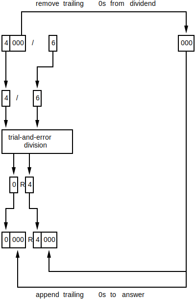
... the quotient is 0 and the remainder is 4000. The operation pretty much failed because the amount of remaining items is the same as the amount starting amount -- nothing was grouped and everything remains. As such, more trialing 0s need to be left in. Re-try the operation with only 2 trialing 0s removed...

... the quotient is 600 and the remainder is 400. When 4000 items are broken up into groups of 6, there will be at least 600 groups. 400 of the 4000 items remain unaccounted for, but the rule can be used again on these 400 items because 400 has trailing 0s (recursive).
The idea behind long division is to break up the dividend into its individual single digit components results (idea 1) and divide each component by the divisor. For example, 752 / 3...

Each of the divisions are easy to perform because trialing 0s can be stripped-off prior to trial-and-error division (ideas 2 and 3). That is, the actual numbers being input into trial-and-error division are much smaller than they would normally be because trailing 0s are removed. Smaller numbers mean easier to perform.
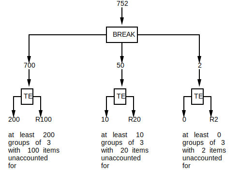
⚠️NOTE️️️⚠️
The TE block is applying idea 3. The trialing 0s are being stripped off, trial-and-error division is being performed, then the 0s are re-append to the quotient and the remainder.
The remainders need to be accounted for. That is, if there are enough remaining items to form a group, they should be grouped. The process is repeated on the remaining items until there aren't enough to form a group (until the remainder is less than the divisor). Once there aren't enough remaining items to form a group, the sum of the quotients becomes the final quotient (final number of groups) and the remainder becomes the final remainder...
⚠️NOTE️️️⚠️
The diagram below looks daunting but it's just 3 copies of the diagrams above stacked on top of each other -- 1 for each iteration. The remainders from each iteration are being combined and used as the input for the next iteration. The quotients from each iteration are being combined to get the total quotient (total number of groups).
The diagram is intended to be an intermediary step to reasoning about long division. There's further simplification / explanation after it.

The answer to 752 / 3 is 250R2.
⚠️NOTE️️️⚠️
You can confirm this by doing 250 * 3 then adding 2. The result should be 752.
This process can be made much simpler by focusing on one component at a time. Starting from the largest component to the smallest component, divide (using idea 3) but then roll-in (add) the remainder into the next component. The thought process is exactly the same as above -- the division is being performed on a component and the remaining items from that division are being accounted for because they're being added to the next component (which gets divided next). For example, 752 / 3...
⚠️NOTE️️️⚠️
Notice how the inputs to TE still have trailing 0s.
Divide the largest component (700)...
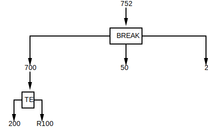
Roll in remainder to the second largest component (50) and divide...
Roll in remainder to the third largest component (2) and divide...

The sum of the quotients becomes the final quotient, and the last remainder becomes the final remainder...

This is effectively the algorithm that humans use for long division -- for each component, divide (using idea 3) and roll in the remainder to the next component. Repeat the process until there are no components remaining.
The notation used by humans for long division is...
{kt}\begin{array}{l}\phantom{{{divisor}\smash{)}}}{{quotient}} \\{{divisor}}\overline{\smash{)}{dividend}} \\\end{array}
For example, long division notation for 752 / 3 is initially written as...
{kt}\begin{array}{l}\phantom{{{3}\smash{)}}}{{}} \\{{3}}\overline{\smash{)}{752}} \\\end{array}
Starting with the first component, divide (using idea 3) to get the quotient and remainder for that component: 200R100. Then, strip-off the trialing 0s and place the quotient on-top of the component and the remainder below the component...
{kt}\begin{array}{l}\phantom{{{3}\smash{)}}}{{\green{2}}} \\{{3}}\overline{\smash{)}{752}} \\\phantom{{{3}\smash{)}}}{?} \\\phantom{{{3}\smash{)}}}{\green{1}} \\\end{array}
A question mark is sandwiched between the component and remainder. The question mark should be set to the value of the divisor (3) multiplied by the quotient (200), with its trailing 0s stripped out. 3 * 200 = 600, strip the trialing 0s to get 6...
{kt}\begin{array}{l}\phantom{{{3}\smash{)}}}{{2}} \\{{3}}\overline{\smash{)}{752}} \\\phantom{{{3}\smash{)}}}{\underline{\green{6}}} \\\phantom{{{3}\smash{)}}}{1} \\\end{array}
⚠️NOTE️️️⚠️
The traditional way this is stated when being taught in school is "how many times can 7 go into 3?". Essentially, find the minimum number that the quotient can be without exceeding the component.
{kt}\begin{array}{l}\phantom{{{3}\smash{)}}}{{2}} \\{{3}}\overline{\smash{)}{752}} \\\end{array}
Put the answer to 3*2 = 6 underneath the component, then subtract to get the remainder...
{kt}\begin{array}{l}\phantom{{{3}\smash{)}}}{{2}} \\{{3}}\overline{\smash{)}{752}} \\\phantom{{{3}\smash{)}}}{\underline{6}} \\\phantom{{{3}\smash{)}}}{1} \\\end{array}
Copy the next largest component down such that it's next the remainder...
{kt}\begin{array}{l}\phantom{{{3}\smash{)}}}{{2}} \\{{3}}\overline{\smash{)}{752}} \\\phantom{{{3}\smash{)}}}{\underline{6}} \\\phantom{{{3}\smash{)}}}{1\green{5}} \\\end{array}
This is effectively the same as adding the remainder to the next component: 100 + 50 = 150. Trailing 0s aren't seen because they're implied in long division notation.
⚠️NOTE️️️⚠️
The traditional way this is stated when being taught in school is "drag down the next component".
Repeat the process but target the 15 at the bottom. The 15 is the next component rolled into the remainder...
{kt}\begin{array}{l}\phantom{{{3}\smash{)}}}{{2\green{5}}} \\{{3}}\overline{\smash{)}{752}} \\\phantom{{{3}\smash{)}}}{\underline{6}} \\\phantom{{{3}\smash{)}}}{15} \\\phantom{{{3}\smash{)}}}{\underline{\green{15}}} \\\phantom{{{3}\smash{)}}}{\phantom{0}\green{0}} \\\end{array}
Copy the next largest component down such that it's next the remainder...
{kt}\begin{array}{l}\phantom{{{3}\smash{)}}}{{25}} \\{{3}}\overline{\smash{)}{752}} \\\phantom{{{3}\smash{)}}}{6} \\\phantom{{{3}\smash{)}}}{15} \\\phantom{{{3}\smash{)}}}{15} \\\phantom{{{3}\smash{)}}}{\phantom{0}0\green{2}} \\\end{array}
Repeat the entire process but target the 2 at the bottom. The 2 is the next component rolled into the remainder...
{kt}\begin{array}{l}\phantom{{{3}\smash{)}}}{{25\green{0}}} \\{{3}}\overline{\smash{)}{752}} \\\phantom{{{3}\smash{)}}}{\underline{6}} \\\phantom{{{3}\smash{)}}}{15} \\\phantom{{{3}\smash{)}}}{\underline{15}} \\\phantom{{{3}\smash{)}}}{\phantom{0}02} \\\phantom{{{3}\smash{)}}}{\phantom{00}\underline{\green{0}}} \\\phantom{{{3}\smash{)}}}{\phantom{00}\green{2}} \\\end{array}
The final reminder isn't 0, so place it next to the final quotient...
{kt}\begin{array}{l}\phantom{{{3}\smash{)}}}{{250\green{R2}}} \\{{3}}\overline{\smash{)}{752}} \\\phantom{{{3}\smash{)}}}{\underline{6}} \\\phantom{{{3}\smash{)}}}{15} \\\phantom{{{3}\smash{)}}}{\underline{15}} \\\phantom{{{3}\smash{)}}}{\phantom{0}02} \\\phantom{{{3}\smash{)}}}{\phantom{00}\underline{0}} \\\phantom{{{3}\smash{)}}}{\phantom{00}2} \\\end{array}
The way to perform this algorithm via code is as follows...
arithmetic_code/WholeNumber.py
python
#MARKDOWN_DIV\s*\n([\s\S]+?)\n\s*#MARKDOWN_DIV
Whole number word conversion is the process of taking a whole number and converting it to words. To convert a whole number to words, break up the number into groups of 3 from least-significant digit to most-significant digit (right-to-left). For example, the number 9876543210 gets broken up as follows...
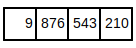
For each group, use the following algorithm to construct the words to represent that group:
If top digit exists, use the following mapping:
| Digit | Word |
|---|---|
| 0 | |
| 1 | one hundred |
| 2 | two hundred |
| 3 | three hundred |
| 4 | four hundred |
| 5 | five hundred |
| 6 | six hundred |
| 7 | seven hundred |
| 8 | eight hundred |
| 9 | nine hundred |
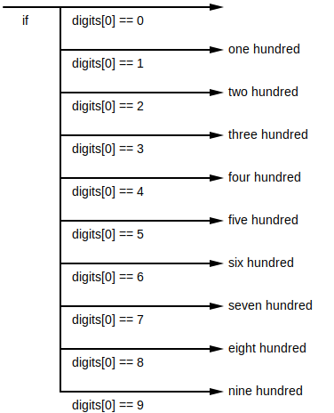
If middle digit is 1, combine in with the bottom digit and use the following mapping:
| Digits | Word |
|---|---|
| 10 | ten |
| 11 | eleven |
| 12 | twelve |
| 13 | thirteen |
| 14 | fourteen |
| 15 | fifteen |
| 16 | sixteen |
| 17 | seventeen |
| 18 | eighteen |
| 19 | nineteen |
If the middle digit isn't 1, use the following mapping:
| Digit | Word |
|---|---|
| 0 | |
| 2 | twenty |
| 3 | thirty |
| 4 | forty |
| 5 | fifty |
| 6 | sixty |
| 7 | seventy |
| 8 | eighty |
| 9 | ninety |

If the middle digit wasn't 1, use the following mapping for the bottom digit:
| Digit | Word |
|---|---|
| 0 | |
| 1 | one |
| 2 | two |
| 3 | three |
| 4 | four |
| 5 | five |
| 6 | six |
| 7 | seven |
| 8 | eight |
| 9 | nine |
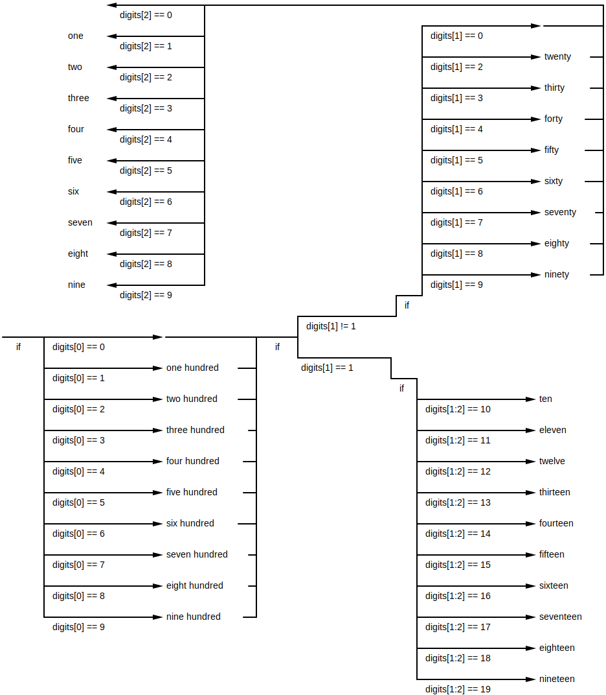
In the example above, each group would get converted as follows...

The words for each group get a special suffix. For each group from right-to-left, ...
| Group | Word |
|---|---|
| 1 | |
| 2 | thousand |
| 3 | million |
| 4 | billion |
| 5 | trillion |
| ... | ... |
In the example above, each group would get its corresponding suffix added...
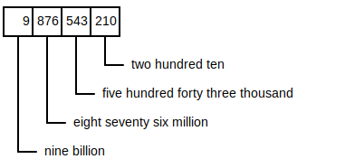
There is one special case with number to word conversions: if the number being converted is 0, the output should be zero.
The way to perform this algorithm via code is as follows...
arithmetic_code/WholeNumber.py
python
#MARKDOWN_TO_WORDS\s*\n([\s\S]+?)\n\s*#MARKDOWN_TO_WORDS
↩PREREQUISITES↩

Integer numbers are place-value notation numbers that have no fractional part but are mirrored across 0. That is, think of integers as 2 sets of counting numbers separated by 0, where everything to the...

The prefix that determines if a integer is positive or negative is referred to as the sign. All numbers other than 0 have a sign. 0 represents nothing / no value, which is why it doesn't have a sign -- it's used as a separation point between the positive and negative values.
⚠️NOTE️️️⚠️
If a number (other than 0) is positive, the + sign is typically left out. So, ...
Conceptually, you can think of the positives the same way you think about natural numbers. They represent some value. For each positive, there's a corresponding negative that represents the opposite of that positive value. For example, if...
positive integers represent steps forward, then negative integers would represent steps backward.

positive integers represent money gained, then negative integers would represent money owed or spent.

positive integers represent depth below sea-level, then negative integers would represent elevation above sea-level.

↩PREREQUISITES↩
Integer equality is an extension of whole number equality. In whole number equality, the digit at each position must match between the numbers being compared. Integer equality adds an extra stipulation: the sign of the number must match as well.
For example, the numbers -195 and 195 are not equal...
- 1 9 5
x | | |
+ 1 9 5
... while the numbers -195 and -195 are equal...
- 1 9 5
| | | |
- 1 9 5
The way to perform this algorithm via code is as follows...
arithmetic_code/IntegerNumber.py
python
#MARKDOWN_EQ\s*\n([\s\S]+)\n\s*#MARKDOWN_EQ
↩PREREQUISITES↩
Recall that the number line for integers is more complex than the number line for whole numbers. The negatives and positives mirror at 0 and they grow in opposite directions:

The algorithm for integer less than applies different logic depending on the sign of each number. Specifically, if the numbers are...
both non-negative, apply the whole number less than algorithm. For example, 2 < 5 would be processed just as if it were a whole number...
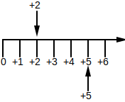
⚠️NOTE️️️⚠️
Non-negative includes both 0 and positive numbers.
both non-positive, switch the negative sign to positive sign and apply the whole number greater than algorithm. For example, -5 < -2 would become 5 > 2...

After switching sign, the number being tested (5) is to the right of the other number (2). 5 > 2 would be processed just as if it were a whole number.
⚠️NOTE️️️⚠️
Non-positive includes both 0 and negative numbers.
negative and positive, return true only if the negative number is the one being tested. For example, 2 < -4 is false because 2 (the number being tested) isn't negative...
The way to perform this algorithm via code is as follows...
arithmetic_code/IntegerNumber.py
python
#MARKDOWN_LT\s*\n([\s\S]+)\n\s*#MARKDOWN_LT
↩PREREQUISITES↩
Recall that the number line for integers is more complex than the number line for whole numbers. The negatives and positives mirror at 0 and they grow in opposite directions:
The algorithm for integer greater than applies different logic depending on the sign of each number. Specifically, if the numbers are...
both non-negative, apply the whole number greater than algorithm. For example, 5 > 2 would be processed just as if it were a whole number...

⚠️NOTE️️️⚠️
Non-negative includes both 0 and positive numbers.
both non-positive, switch the negative sign to positive sign and apply the whole number less than algorithm. For example, -2 > -5 would become 2 < 5...

After switching sign, the number being tested (2) is to the left of the other number (5). 2 < 5 would be processed just as if it were a whole number.
⚠️NOTE️️️⚠️
Non-positive includes both 0 and negative numbers.
negative and positive, return true only if the positive number is the one being tested. For example, 2 > -4 is true because 2 (the number being tested) is positive...
The way to perform this algorithm via code is as follows...
arithmetic_code/IntegerNumber.py
python
#MARKDOWN_GT\s*\n([\s\S]+)\n\s*#MARKDOWN_GT
↩PREREQUISITES↩
Conceptually, you can think of integer addition as movement on a number line. If some integer is being added to a...
positive integer, it's moving right on the number line.
For example, 3 + 4 is 7...
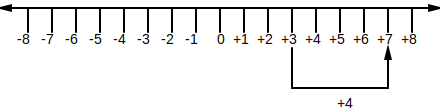
For example, -5 + 4 is -1...
Notice that the result of this example's movement is exactly the same as subtracting magnitudes, then tacking on a negative sign to the result: 5 - 4 is 1, tack on a negative sign to get -1.
negative integer, it's moving left on the number line.
For example, -1 + -4 is -5...
Notice that the result of this example's movement is exactly the same as adding magnitudes, then tacking on a negative sign to the result: 1 + 4 is 5, tack on a negative sign to get -5.
For example, 3 + -4 is -1...
Notice that the result of this example's movement is exactly the same as swapping, subtracting, then tacking on a negative sign to the result: 4 - 3 is 1, tack on a negative sign: -1.
The algorithm used by humans to add integer numbers together revolves around inspecting the sign and magnitude of each integer, then deciding whether to perform whole number addition or whole number subtraction to get the result. The codification of this algorithm is as follows...
arithmetic_code/IntegerNumber.py
python
#MARKDOWN_ADD\s*\n([\s\S]+?)\n\s*#MARKDOWN_ADD
Conceptually, you can think of integer subtraction as movement on a number line (opposite movement to that of integer addition). If the integer being subtracted by (right-hand side) is a...
positive integer, it's moving left on the number line.
For example, 5 - 4 = 1...

For example, -2 - 4 = -6...

Notice that the result of this example's movement is exactly the same as adding magnitudes, then tacking on a negative sign to the result: 2 + 4 = 6, tack on a negative sign to get -6.
For example, 3 - 4 = -1...

Notice that the result of this example's movement is exactly the same as swapping, subtracting, then tacking on a negative sign: 4 - 3 = 1, tack on a negative sign to get -1.
negative integer, it's moving right on the number line.
For example, 3 - -4 = 7...

Notice that the result of this movement is exactly the same as performing 3 + 4.
For example, -3 - -4 = 1...

Notice that the result of this example's movement is exactly the same as swapping, subtracting, then tacking on a positive sign to the result: 4 - 3 = 1, tack on a positive sign: 1.
The algorithm used by humans to subtract integer numbers revolves around inspecting the sign and magnitude of each integer, then deciding whether to perform whole number addition or whole number subtraction to get the result. The codification of this algorithm is as follows...
arithmetic_code/IntegerNumber.py
python
#MARKDOWN_SUB\s*\n([\s\S]+?)\n\s*#MARKDOWN_SUB
Conceptually, you can think of integer multiplication as repetitive integer addition / integer subtraction. When the right hand side is negative, think of it as subtraction instead of addition. For example, think of ...
5 * 3 as add 5, 3 times
-5 * 3 as add -5, 3 times
3 * -5 as subtract 5, 3 times
⚠️NOTE️️️⚠️
Subtraction starts from 0, so it'd be...
Or, you could use the commutative property of multiplication and swap the operands -- 3 * -5 becomes -5 * 3, exactly the same as the previous bullet point.
-5 * -3 as subtract -5, 3 times
One useful property of integer multiplication is that, multiplying any non-zero number by -1 will slip its sign. For example...
5 * -1 = -5
-5 * -1 = 5
The algorithms humans use to perform integer multiplication is as follows:
The result produced using the algorithm will be exactly the same as the result produced using repetitive addition/subtraction.
The way to perform this algorithm via code is as follows...
arithmetic_code/IntegerNumber.py
python
#MARKDOWN_MUL\s*\n([\s\S]+?)\n\s*#MARKDOWN_MUL
↩PREREQUISITES↩
Conceptually, you can think of integer division the same as whole number division: repetitive integer subtraction -- how many iterations can be subtracted until reaching 0. When both numbers being divided have the same sign, the process is nearly the same as whole number division. For example, ...
15 / 3 -- how many iterations og subtracting by 3 before 15 reaches 0
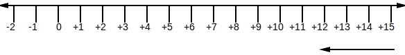
You need to subtract by 3 to get closer to 0...
5 iterations of subtraction.
-15 / -3 -- how many iterations of subtracting by -3 before -15 reaches 0

You need to subtract by -3 to get closer to 0...
5 iterations of subtraction.
When the sign are different, it becomes slightly more difficult to conceptualize. For example, using repetitive subtraction on -15 / 3 will get farther from 0 rather than closer:
In cases such as this, the concept of negative iterations is needed. For example, when ...
Why? The inverse (opposite) of subtraction is addition. Performing -5 iterations means doing the opposite for 5 iterations.
⚠️NOTE️️️⚠️
Remember that for integer numbers, a negative integer is one that's the mirror opposite of the positive (and vice versa).
-15 / 3 -- how many iterations of subtracting by 3 before -15 reaches 0
You need to add by 3 to get closer to 0...
-5 iterations of subtraction.
15 / -3 -- how many iterations of subtracting by -3 before 15 reaches 0
You need to add by -3 to get closer to 0...
-5 iterations of subtraction.
The algorithms humans use to perform integer multiplication is as follows:
The result produced using the algorithm will be exactly the same as the result produced using repetitive subtraction.
The way to perform this algorithm via code is as follows...
arithmetic_code/IntegerNumber.py
python
#MARKDOWN_DIV\s*\n([\s\S]+?)\n\s*#MARKDOWN_DIV
↩PREREQUISITES↩
Integer word conversion is the process of taking an integer number and converting it to words. The algorithm used by humans to convert an integer number to words is as follows:
Begin by converting the sign to a word. If the number is ...
⚠️NOTE️️️⚠️
Then, write out the actual number as you would during whole number word conversion.

For example, the number...
The way to perform this algorithm via code is as follows...
arithmetic_code/IntegerNumber.py
python
#MARKDOWN_TO_WORDS\s*\n([\s\S]+?)\n\s*#MARKDOWN_TO_WORDS
↩PREREQUISITES↩
Imagine that you have the integer numbers n and m (use the letters as placeholders for some arbitrary integer numbers). m is a multiple of n if some integer exists such that {kt} n \cdot ? = m.
For example, the multiples of 2 are...
2*0=2 -- 0 is a multiple of 2
2*1=2 -- 2 is a multiple of 2
┌──┐
│●●│ 2 can be grouped as 1 group of 2
└──┘
2*2=4 -- 4 is a multiple of 2
┌──┬──┐
│●●│●●│ 4 can be grouped as 2 groups of 2
└──┴──┘
2*3=6 -- 6 is a multiple of 2
┌──┬──┬──┐
│●●│●●│●●│ 6 can be grouped as 3 groups of 2
└──┴──┴──┘
2*4=8 -- 8 is a multiple of 2
┌──┬──┬──┬──┐
│●●│●●│●●│●●│ 8 can be grouped as 4 groups of 2
└──┴──┴──┴──┘
etc..
A number like 7 wouldn't be a multiple of 2 because there is no integer that can be multiplied by 2 to get 7 -- 2*3.5=7, but 3.5 isn't an integer.
┌──┬──┬──┬─┐
│●●│●●│●●│●│ 7 can't be grouped as groups of 2 (last group only has 1)
└──┴──┴──┴─┘
⚠️NOTE️️️⚠️
See divisible section.
↩PREREQUISITES↩
Imagine that you have the integer numbers d and n (use the letters as placeholders for some arbitrary integer numbers). d is divisible by n if {kt} d \div n has a remainder of 0.
For example, 8 is divisible by...
8/1=8 -- 8 is divisible by 1
┌────────┐
│●●●●●●●●│ 8 can be grouped as 1 group of 8
└────────┘
8/2=4 -- 8 is divisible by 2
┌────┬────┐
│●●●●│●●●●│ 8 can be grouped as 2 groups of 4
└────┴────┘
8/4=2 -- 8 is divisible by 4
┌──┬──┬──┬──┐
│●●│●●│●●│●●│ 8 can be grouped as 4 groups of 2
└──┴──┴──┴──┘
8/8=1 -- 8 is divisible by 8
┌─┬─┬─┬─┬─┬─┬─┬─┐
│●│●│●│●│●│●│●│●│ 8 can be grouped as 8 groups of 1
└─┴─┴─┴─┴─┴─┴─┴─┘
In all of the above cases, there is no remainder. 8 wouldn't be divisible by a number like 3 because there would be a remainder. 8/3=2R2.
┌───┬───┬──┐
│●●●│●●●│●●│ 8 can't be grouped as groups of 3 (last group only has 2)
└───┴───┴──┘
⚠️NOTE️️️⚠️
The phrases evenly divisible, evenly divides and divisible all mean the same thing.
The phrase evenly divides into is the same as divides into but that it doesn't have a remainder. 4 divides into 8 (4/8=2), but 6 doesn't divide into 8 (6/8=0.75).
⚠️NOTE️️️⚠️
Divisible and multiple refer to the same idea. Saying that 275 is a multiple of 5 ({kt} 5\cdot?=275) is the same as saying 275 is divisible by 5 ({kt} 275\div5=?).
Common divisibility tests are simple tests you can do on a number to see if its divisible. To see if a number is divisible by...
2, check if the last digit is either 0, 2, 4, 6, or 8.
| 1 | 2 | 3 | 4 | 5 | 6 | 7 | 8 | 9 | 10 |
| 11 | 12 | 13 | 14 | 15 | 16 | 17 | 18 | 19 | 20 |
| 21 | 22 | 23 | 24 | 25 | 26 | 27 | 28 | 29 | 30 |
| 31 | 32 | 33 | 34 | 35 | 36 | 37 | 38 | 39 | 40 |
| 41 | 42 | 43 | 44 | 45 | 46 | 47 | 48 | 49 | 50 |
5, check if the last digit is either 5 or 0.
| 1 | 2 | 3 | 4 | 5 | 6 | 7 | 8 | 9 | 10 |
| 11 | 12 | 13 | 14 | 15 | 16 | 17 | 18 | 19 | 20 |
| 21 | 22 | 23 | 24 | 25 | 26 | 27 | 28 | 29 | 30 |
| 31 | 32 | 33 | 34 | 35 | 36 | 37 | 38 | 39 | 40 |
| 41 | 42 | 43 | 44 | 45 | 46 | 47 | 48 | 49 | 50 |
10, check if the last digit is 0.
| 1 | 2 | 3 | 4 | 5 | 6 | 7 | 8 | 9 | 10 |
| 11 | 12 | 13 | 14 | 15 | 16 | 17 | 18 | 19 | 20 |
| 21 | 22 | 23 | 24 | 25 | 26 | 27 | 28 | 29 | 30 |
| 31 | 32 | 33 | 34 | 35 | 36 | 37 | 38 | 39 | 40 |
| 41 | 42 | 43 | 44 | 45 | 46 | 47 | 48 | 49 | 50 |
3, sum up the individual digits and check if divisibly by 3.
This is a recursive operation. For example...
Keep doing it until you get a 1 digit answer and check to see if that answer is either 3, 6, or 9.
| 1 | 2 | 3 | 4 | 5 | 6 | 7 | 8 | 9 | 10 |
| 11 | 12 | 13 | 14 | 15 | 16 | 17 | 18 | 19 | 20 |
| 21 | 22 | 23 | 24 | 25 | 26 | 27 | 28 | 29 | 30 |
| 31 | 32 | 33 | 34 | 35 | 36 | 37 | 38 | 39 | 40 |
| 41 | 42 | 43 | 44 | 45 | 46 | 47 | 48 | 49 | 50 |
| 51 | 52 | 53 | 54 | 55 | 56 | 57 | 58 | 59 | 60 |
6, apply common divisibility tests for 2 and 3, they both must pass.
| 1 | 2 | 3 | 4 | 5 | 6 | 7 | 8 | 9 | 10 |
| 11 | 12 | 13 | 14 | 15 | 16 | 17 | 18 | 19 | 20 |
| 21 | 22 | 23 | 24 | 25 | 26 | 27 | 28 | 29 | 30 |
| 31 | 32 | 33 | 34 | 35 | 36 | 37 | 38 | 39 | 40 |
| 41 | 42 | 43 | 44 | 45 | 46 | 47 | 48 | 49 | 50 |
| 51 | 52 | 53 | 54 | 55 | 56 | 57 | 58 | 59 | 60 |
⚠️NOTE️️️⚠️
The bold numbers in the table above are numbers that appear bold in both the table for 2s and the table for 3s -- they must be bold in both tables.
The common divisibility test algorithm written as code is as follows:
arithmetic_code/CommonDivisibilityTest.py
python
#MARKDOWN_CDT\s*\n([\s\S]+)\n\s*#MARKDOWN_CDT
For example, the common divisibility tests for 18...
↩PREREQUISITES↩
Let's say you have an integer number. The factors of that number are the integers you can multiply together to get that number...
my_number: int = ...
factor1: int = ...
factor2: int = ...
if (factor1 * factor2 == my_number):
print(f'{factor1} and {factor2} are factors of {my_number})
For example, the factors of 32 are...
... 1, 2, 4, 8, 16, and 32.
⚠️NOTE️️️⚠️
Shouldn't negative integers also be a factor? e.g. 32=-1*-32. It turns out that for positive integers, negative factors aren't included? For negative integers, they are. Factoring negative integers is discussed further below in this section.
See https://math.stackexchange.com/a/404789
The factors for any number will always be between 1 and that number (inclusive). A naive algorithm for finding the factors of any number would be to have a nested loop exhaustively check integers to see which are factors...
arithmetic_code/Factor.py
python
#MARKDOWN_NAIVE\s*\n([\s\S]+)\n\s*#MARKDOWN_NAIVE
We can take advantage of the fact that division is the inverse of multiplication to optimize the algorithm above. The code below loops over each possible factor once, using it to calculate what the other factor would be and then checking it to make sure it's valid...
arithmetic_code/Factor.py
python
#MARKDOWN_FAST\s*\n([\s\S]+)\n\s*#MARKDOWN_FAST
The optimized algorithm above can be even further optimized by making it skip over calculations that give back repeat factors. As factor1 increases, factor2 decreases. Once factor1 => factor2, each is basically walking into domains the other was just in (they're each going to walk over integers the other already walked over). There's no point in continuing any further because the factors calculated past that point will just be duplicates of those prior. For example, when calculating the factors of 32...
Any factors calculated past factor1 => factor2 will be duplicates of factors that were already walked over...
arithmetic_code/Factor.py
python
#MARKDOWN_FASTEST\s*\n([\s\S]+)\n\s*#MARKDOWN_FASTEST
There are 2 special cases when dealing with factors...
The first is that all numbers are a factor of 0 (e.g. 0*5=0, 0*9999=0).
The second is that if the number were a negative integer, the factors would include negative numbers as well. For example, the factors of -8 are...
... -8, -4, -2, -1, 1, 2, 4, 8.
A counting number with only 2 factors is called a prime number. That is, if a counting number is only divisible by 1 and it itself, it's a prime number. Examples of prime numbers: 2, 3, 5, 7, 11, 13, 17, 19, 23, 29, 31, 37, 41, 43, and 47.
A counting number with more than 2 factors is called a composite number. Examples of composite numbers: 4, 6, 8, 9, 10, 12, 14, 15, 16, 18, and 20.
⚠️NOTE️️️⚠️
The number 1 is neither a prime number nor a composite number. 1's only factor is itself: 1*1=1. Prime numbers need 2 factors (1 and itself) and composite numbers need more than 2 factors.
The algorithm to identify primes vs composites is as follows...
arithmetic_code/Factor.py
python
#MARKDOWN_PRIMETEST\s*\n([\s\S]+)\n\s*#MARKDOWN_PRIMETEST
Every composite number can be written as a product of prime numbers. For example...
The process of breaking down a composite number into a product of primes is called prime factorization. There are 2 algorithms that humans use to factorize primes: factor tree method and ladder method. Each method is described below.
The factor tree method is an algorithm used by humans for prime factorization. The algorithm involves taking the input and recursively breaking it down into one of its factor pairs until all factors are prime.
For example, to break down the number 54, choose one of its factor pairs...

Then, for each factor, break it down even further by choosing one of its factor pairs...
All factors are now prime -- 54 = 3*2*3*3.
⚠️NOTE️️️⚠️
Prime factors are typically written out from smallest to largest, so writing out the prime factors of the example above would be 54 = 2*3*3*3.
If you know exponents, the example above can be further condensed as {kt} 54 = 2 \cdot 3^3.
When choosing a factor pair, the pair can't include 1 or the number being factored itself. For example, if choosing a factor pair for 12..
The reason why ...
For example, trying to build a factor tree for 12 using one of the bad factor pairs...

Note that the prime factors for a number will always be the same regardless of which factor pairs are chosen (as long as its a valid factor pair). For example, in the initial example above, if 54 were factored to (2, 27) instead of (9, 6) ...

The prime factors would still be 54 = 2*3*3*3.
The way to perform this algorithm as code is as follows...
arithmetic_code/Factor.py
python
#MARKDOWN_FACTORTREE\s*\n([\s\S]+)\n\s*#MARKDOWN_FACTORTREE
Ladder
The ladder method is an algorithm used by humans for prime factorization. The algorithm involves:
⚠️NOTE️️️⚠️
The ladder method is sometimes referred to as stacked division.
For example, to break down the number 54, start by iteratively dividing 54 by primes until its divisible (no remainder)...
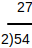
Dividing by 2 results in 27 -- no remainder. Iteratively divide 27 by primes until its divisible (no remainder)...
Dividing by 3 results in 9 -- no remainder. Iteratively divide 9 by primes until its divisible (no remainder).

Dividing by 3 results in 3 -- no remainder. The process stops because 3 (the quotient) is a prime.
All factors are now prime -- 54 = 2*3*3*3.
⚠️NOTE️️️⚠️
Prime factors are typically written out from smallest to largest, so writing out the prime factors of the example above would be 54 = 2*3*3*3.
If you know exponents, the example above can be further condensed as {kt} 54 = 2 \cdot 3^3.
Note that factor tree method and the ladder method are effectively doing the same thing. The only difference is that the ladder method is forcing you to choose a factor pair with a prime in it -- it's testing primes to see if they're viable factor pairs.
The ladder above is represented as the following factor tree...
The way to perform this algorithm as code is as follows...
arithmetic_code/Factor.py
python
#MARKDOWN_LADDER\s*\n([\s\S]+)\n\s*#MARKDOWN_LADDER
↩PREREQUISITES↩
The least common multiple is the process of taking 2 numbers and finding the smallest multiple between them. That is, if you listed out their multiples starting from 1, the first match between them would be the least common multiple.
There are 2 common algorithms used to find the least common multiple between 2 numbers.
The first algorithm is called the listing multiples method. It involves listing out the multiples for each number starting from 1 until there's a match. For example, finding the least common multiple between 4 and 6...
| 1 | 2 | 3 | 4 | 5 | 6 | 7 | 8 | 9 | |
|---|---|---|---|---|---|---|---|---|---|
| 4 | 4 | 8 | 12 | 16 | 20 | 24 | 28 | 32 | 36 |
| 6 | 6 | 12 | 18 | 24 | 30 | 36 |
is 12 because 6*2=12 and 4*3=12.
The way to perform this algorithm as code is as follows...
arithmetic_code/LeastCommonMultiple.py
python
#MARKDOWN_WALK\s*\n([\s\S]+)\n\s*#MARKDOWN_WALK
The second algorithm is called the prime factors method. It involves calculating the prime factors for each number and merging them to get the least common multiple. For example, finding the least common multiple between 4 and 6...
prime factors of 4: 4 = 2 * 2
prime factors of 6: 6 = 2 * 2 * 3
merge the prime factors together to get 12 = 2 * 2 * 3

The way to perform this algorithm as code is as follows...
arithmetic_code/LeastCommonMultiple.py
python
#MARKDOWN_PF\s*\n([\s\S]+)\n\s*#MARKDOWN_PF
↩PREREQUISITES↩
The greatest common divisor is the process of taking 2 numbers and finding the largest possible divisor between the two of them. That is, finding the greatest number that evenly divides both numbers.
⚠️NOTE️️️⚠️
This is also referred to as the highest common factor -- you're finding the largest factor that's common in both of them. Common factors between the numbers will evenly divide both numbers.
There are 3 common algorithms used to find the greatest common divisor between 2 numbers.
The first algorithm is to test divisions on incrementally larger numbers until you reach the smaller of the 2 numbers. The largest tested number that was evenly divisible is the greatest common divisor. For example, for the numbers 22 and 8...
{kt} 22 \div 1 = 22 and {kt} 8 \div 1 = 1 (both divisible){kt} 22 \div 2 = 11 and {kt} 8 \div 2 = 4 (both divisible){kt} 22 \div 3 = 7R1 and {kt} 8 \div 3 = 2R2 (both NOT divisible){kt} 22 \div 4 = 5R2 and {kt} 8 \div 4 = 2 (first NOT divisible){kt} 22 \div 5 = 4R2 and {kt} 8 \div 5 = 1R3 (both NOT divisible){kt} 22 \div 6 = 3R4 and {kt} 8 \div 6 = 1R2 (both NOT divisible){kt} 22 \div 7 = 3R1 and {kt} 8 \div 7 = 1R1 (both NOT divisible){kt} 22 \div 8 = 2R6 and {kt} 8 \div 8 = 1 (first NOT divisible)The greatest common divisor is 2.
The way to perform this algorithm as code is as follows...
arithmetic_code/GreatestCommonDivisor.py
python
#MARKDOWN_NAIVE\s*\n([\s\S]+)\n\s*#MARKDOWN_NAIVE
The second algorithm is to factor both numbers and take the largest common factor between them. The largest common factor is the greatest common divisor. For example, for the numbers 22 and 8, ...
The greatest common factor between them is 2.
⚠️NOTE️️️⚠️
You can also use prime factorization. Prime factorize both numbers to their prime factors -- any factors contained in both are prime factors of the greatest common divisor. For example...

The way to perform this algorithm as code is as follows...
arithmetic_code/GreatestCommonDivisor.py
python
#MARKDOWN_FACTOR\s*\n([\s\S]+)\n\s*#MARKDOWN_FACTOR
The third algorithm is to use Euclid's algorithm to compute the greatest common divisor. This is the algorithm most used by both humans and computers to calculate the greatest common divisor because, for large numbers, it's less labour intensive than the other two methods.
Imagine the numbers 8 and 22. The algorithm starts by sorting the numbers from largest to smallest and dividing them:
{kt} 22 \div 8 = 2R6It then takes the divisor and the remainder, sorts them from largest to smallest, and divides them again:
{kt} 8 \div 6 = 1R2It keeps repeating this process until the remainder reaches 0. For this example, it only needs to repeat the process one more time:
{kt} 6 \div 2 = 3R0The greatest common factor is the divisor when the remainder is 0. In this example, it's 2.
The way to perform this algorithm as code is as follows...
arithmetic_code/GreatestCommonDivisor.py
python
#MARKDOWN_EUCLID\s*\n([\s\S]+)\n\s*#MARKDOWN_EUCLID
⚠️NOTE️️️⚠️
The following is my attempt at explaining Euclid's algorithm after reading several online resources. You need an understanding of geometry and algebra before continuing.
Geometric explanation
Conceptually, you can think of Euclid's algorithm as recursively breaking off square chunks out of a rectangular area until it finds the smallest possible chunk that can be evenly copied to recreate the original rectangle. For example, imagine the numbers 21 and 6...

Since in 21x6, 6 is the smaller side, break off 6 from the 21 to get a 6x6 block...

Since in 15x6, 6 is the smaller side, break off 6 from the 15 to get a 6x6 block...

Since in 9x6, 6 is the smaller side, break off 6 from the 9 to get a 6x6 block...

Since in 3x6, 6 is the smaller side, break off 3 from the 6 to get a 3x3 block...

The remaining block is also 3x3 block. As such, the largest size that this entire rectangle can be constructed from is 3x3. The greatest common divisor is 3.

Notice how this is subtracting from the larger side at each step. Since division is iterative subtraction, this entire algorithm can be done using division. Starting from the very beginning...
Since in 21x6, 6 is the smaller side, break off as many blocks of 6 as possible from 21: {kt} 21 \div 6 = 3R3 (3 blocks of 6x6, with 3 remaining)...
Since in 3x6, 3 is the smaller side, break off as many blocks of 3 as possible from 6: {kt} 21 \div 6 = 2R0 (2 blocks of 3x3, with 0 remaining)...
Algebraic explanation
If 2 numbers are evenly divisible by some other number, then their sum/difference must also be divisible. For example, the numbers 21 and 6 are both divisible by 3:
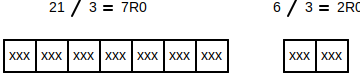
Since they're both divisible by 3, if you were to add 18 and 6 together, the sum would also be divisible by 3...
Similarly, if you were to subtract 21 and 6, the difference would also be divisible by 3...
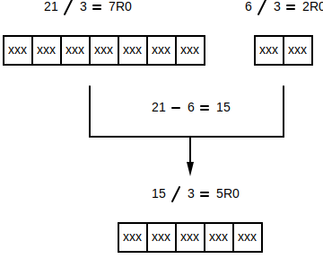
Even if you don't know what the divisor is, you can recursively break down the problem using the rules stated above. Imagine that you didn't know that 3 was the divisor for the previous example, but you know that some evenly divisible number {kt} d existed...
{kt} \frac{21}{d} = xR0{kt} \frac{6}{d} = yR0Since you know that the if 21 and 6 are both divisible by d, their difference must also be divisible by d...
{kt} \frac{21 - 6}{d} = \frac{15}{d} = zR0Now you know that 3 numbers are divisible by d: 21, 6, 15. Since you know that 15 and 6 are both divisible by d, their difference must also be divisible by d...
{kt} \frac{15 - 6}{d} = \frac{9}{d} = wR0Now you know that 4 numbers are divisible by d: 21, 6, 15, and 9. Since you know that 15 and 9 are both divisible by d, their difference must also be divisible by d...
{kt} \frac{15 - 9}{d} = \frac{6}{d} = vR0Now you know that 5 numbers are divisible by d: 21, 6, 15, 9, and 6. Since you know that 9 and 6 are both divisible by d, their difference must also be divisible by d...
{kt} \frac{9 - 6}{d} = \frac{3}{d} = uR0Now you know that 6 numbers are divisible by d: 21, 6, 15, 9, 6, 3. Since you know that 9 and 6 are both divisible by d, their difference must also be divisible by d...
{kt} \frac{3 - 3}{d} = \frac{0}{d} = uR0{kt} 3-3 is 0, so the algorithm stops at this point -- d is 3.
⚠️NOTE️️️⚠️
Notice how for each subtraction step, the last 2 numbers are being chosen. When subtracting, the larger number goes first -- always subtract FROM the larger number.
You can plug 3 for d into the expressions above and each will evaluate to a whole number (no remainder). This algorithm is continually reducing the problem until it converges to the single greatest common divisor...
↩PREREQUISITES↩

Fractions are a way of representing numbers with fractional parts. The syntax for a fraction is {kt} \frac{numerator}{denominator}, where the...
For example, if 4 parts make up a whole (denominator) and you have 9 of those parts (numerator), that's represented as {kt} \frac{9}{4}.


You can think of fractions as unresolved integer division operations. That is, rather than performing the division, the division is left as-is and the entire thing is treated as a value. In the example above, performing {kt} 9 \div 4 results in 2R1, which is exactly the same value as represented by the fraction {kt} \frac{9}{4}. As the circle diagram above shows, 2 wholes are available and 1 remaining part.
Since a fraction represent integer division, the same rules as integer division apply:
Recall that with integer division, if the dividend and the divisor have different sign then the quotient comes out negative. The same division rules apply to fractions. For example, ...
{kt} \frac{9}{4} is the same as {kt} \frac{9}{4}.{kt} \frac{-9}{4} is the same as {kt} - \frac{9}{4}.{kt} \frac{9}{-4} is the same as {kt} - \frac{9}{4}.{kt} \frac{-9}{-4} is the same as {kt} \frac{9}{4}.Recall that with division, the divisor (number being divided by) can't be 0. The same rule applies to fractions. For example, ...
{kt} \frac{9}{0} is undefined.If a fraction has ...
{kt} \frac{1}{2}, {kt} \frac{4}{5}, and {kt} \frac{3}{10}).{kt} \frac{3}{2}, {kt} \frac{5}{5}, and {kt} \frac{15}{3}).⚠️NOTE️️️⚠️
The term improper doesn't seem to mean anything bad? See http://mathforum.org/library/drmath/view/70437.html for reasoning as to why they're called proper vs improper.
⚠️NOTE️️️⚠️
I haven't seen it done a lot but the term quotient may be used to describe a fraction. Since a fraction is essentially an unresolved division operation, the fraction as a whole represents the quotient. As such, a fraction can be referred to as a quotient.
The term ratio may also be used to refer to a fraction.
Two fractions are called equivalent fractions if they represent the same value. That is, the number of pieces may be different, but the overall value represented by the fraction is the same. For example, {kt} \frac{3}{2}, {kt} \frac{6}{4}, and {kt} \frac{12}{8} are all considered equivalent fractions because they represent the same value:
{kt} \frac{3}{2}

{kt} \frac{6}{4}

{kt} \frac{12}{8}
Each fraction has different sized pieces, but the overall value covered by those pieces (the gray region) is the same.
↩PREREQUISITES↩
Of all the equivalent fractions that represent a value, one of those fractions represents that value in the smallest number of pieces possible. This fraction is called the simplified fraction. For the example above, {kt} \frac{3}{2} is the simplified fraction for both {kt} \frac{12}{8} and {kt} \frac{6}{4}:
{kt} \frac{3}{2}
{kt} \frac{6}{4}
{kt} \frac{12}{8}
Algorithmically, a fraction is considered a simplified fraction if no common factors exist between its numerator and its denominator (other than 1). For example, for the fraction {kt} \frac{12}{8}, the...
If a fraction isn't simplified, dividing the numerator and denominator by the highest common factor will make it simplified. In the example above, the highest common factor is 4. As such, dividing both the numerator and denominator by 4 will give the simplified fraction {kt} \frac{3}{2}.
⚠️NOTE️️️⚠️
The process described above is getting the greatest common divisor / highest common factor for the 2 denominators, then dividing both denominators by it.
arithmetic_code/FractionNumber.py
python
#MARKDOWN_SIMP\s*\n([\s\S]+?)\n\s*#MARKDOWN_SIMP
↩PREREQUISITES↩
Given a pair of fractions that have different denominators, you can find a pair of equivalent fractions that share a common denominator. For example, the fractions {kt} \frac{1}{2} and {kt} \frac{1}{3}...
{kt} \frac{1}{2}
{kt} \frac{1}{3}
... have the following equivalent fractions that share a common denominator...
{kt} \frac{3}{6}

{kt} \frac{2}{6}

For any 2 fractions, the easiest algorithm to find equivalent fractions with common denominators is to multiply the numerator and denominator of each fraction by the denominator of the other fraction. So in the example above, the ...
{kt} \frac{1}{2} gets multiplied by 3 to get {kt} \frac{3}{6}.{kt} \frac{1}{3} gets multiplied by 2 to get {kt} \frac{2}{6}.⚠️NOTE️️️⚠️
If you already know fraction multiplication, you're effectively doing fraction multiplication here...
{kt} \frac{1}{3} \cdot \frac{6}{6} = {kt} \frac{6}{18}{kt} \frac{1}{6} \cdot \frac{3}{3} = {kt} \frac{3}{18}arithmetic_code/FractionNumber.py
python
#MARKDOWN_COMMON_DENOMINATOR_NAIVE\s*\n([\s\S]+?)\n\s*#MARKDOWN_COMMON_DENOMINATOR_NAIVE
The problem with the algorithm above is that it can result in fractions that have large numerators and denominators. For example, using the algorithm above to get the common denominator for {kt} \frac{4}{15} and {kt} \frac{5}{10} results in {kt} \frac{40}{150} and {kt} \frac{75}{150}.
A better approach that often leads to smaller numerators and denominators is to first figure out what the least common multiple between the denominators is (least common denominator). By figuring out what the least common denominator is, you can then work backwards to find the equivalent fractions that have those denominators:
So for the example above, the least common denominator for 15 and 10 is 30...
{kt} 30 \div 15 = 2, so {kt} \frac{4}{15} becomes {kt} \frac{8}{30}.{kt} 30 \div 10 = 3, so {kt} \frac{5}{10} becomes {kt} \frac{15}{30}.⚠️NOTE️️️⚠️
If you already know fraction multiplication, you're effectively doing fraction multiplication here...
{kt} \frac{4}{15} \cdot \frac{2}{2} = {kt} \frac{8}{30}{kt} \frac{5}{10} \cdot \frac{3}{3} = {kt} \frac{15}{30}arithmetic_code/FractionNumber.py
python
#MARKDOWN_COMMON_DENOMINATOR_LCM\s*\n([\s\S]+?)\n\s*#MARKDOWN_COMMON_DENOMINATOR_LCM
↩PREREQUISITES↩
Conceptually, you can think of fraction equality as comparing two fractions with similar sized parts to see if they have the same number of parts. That is, as long as the number of parts used to represent a whole (denominator) is the same between both fractions, testing to see if the fractions are equal is simply testing to see if the individual parts (numerators) are equal.
For example, the denominator for the fractions {kt} \frac{1}{4} and {kt} \frac{2}{4} is 4. Since the fractions have a common denominator, you can test if they're equal by applying integer equality to the numerators...
{kt} \frac{1}{4}
{kt} \frac{2}{4}

{kt} \frac{1}{4} = \frac{2}{4} is computed as {kt} 1 = 2 (false).
If the fractions being compared don't have a common denominator, you'll need to find equivalent fractions that do. The best way to do this is to use the least common denominator method. For example, before being able to compare {kt} \frac{1}{2} and {kt} \frac{2}{3}, they need to be converted to equivalent fractions that share a common denominator...
{kt} \frac{1}{2} becomes {kt} \frac{3}{6}
{kt} \frac{2}{3} becomes {kt} \frac{4}{6}

{kt} \frac{3}{6} = \frac{4}{6} is computed as {kt} 3 = 4 (false).
The way to perform this algorithm via code is as follows...
arithmetic_code/FractionNumber.py
python
#MARKDOWN_EQ\s*\n([\s\S]+)\n\s*#MARKDOWN_EQ
↩PREREQUISITES↩
Conceptually, you can think of fraction less than as comparing two fractions with similar sized parts to see which has less parts. That is, as long as the number of parts used to represent a whole (denominator) is the same between both fractions, testing to see which fraction is less is simply testing to see which has less individual parts (numerators).
For example, the denominator for the fractions {kt} \frac{1}{4} and {kt} \frac{2}{4} is 4. Since the fractions have a common denominator, you can test to see which is less by applying integer less than to the numerators...
{kt} \frac{1}{4}
{kt} \frac{2}{4}
{kt} \frac{1}{4} < \frac{2}{4} is computed as {kt} 1 < 2 (true).
If the fractions being compared don't have a common denominator, you'll need to find equivalent fractions that do. The best way to do this is to use the least common denominator method. For example, before being able to compare {kt} \frac{1}{4} and {kt} \frac{1}{6}, they need to be converted to equivalent fractions that share a common denominator...
{kt} \frac{1}{4} becomes {kt} \frac{3}{12}

{kt} \frac{1}{6} becomes {kt} \frac{2}{12}


{kt} \frac{3}{12} < \frac{2}{12} is computed as {kt} 3 < 2 (false).
The way to perform this algorithm via code is as follows...
arithmetic_code/FractionNumber.py
python
#MARKDOWN_LT\s*\n([\s\S]+)\n\s*#MARKDOWN_LT
↩PREREQUISITES↩
Conceptually, you can think of fraction greater than as comparing two fractions with similar sized parts to see which has more parts. That is, as long as the number of parts used to represent a whole (denominator) is the same between both fractions, testing to see which fraction is more is simply testing to see which has more individual parts (numerators).
For example, the denominator for the fractions {kt} \frac{1}{4} and {kt} \frac{2}{4} is 4. Since the fractions have a common denominator, you can test to see which is more by applying integer less than to the numerators...
{kt} \frac{1}{4}
{kt} \frac{2}{4}
{kt} \frac{1}{4} > \frac{2}{4} is computed as {kt} 1 > 2 (false).
If the fractions being compared don't have a common denominator, you'll need to find equivalent fractions that do. The best way to do this is to use the least common denominator method. For example, before being able to compare {kt} \frac{1}{4} and {kt} \frac{1}{6}, they need to be converted to equivalent fractions that share a common denominator...
{kt} \frac{1}{4} becomes {kt} \frac{3}{12}
{kt} \frac{1}{6} becomes {kt} \frac{2}{12}
{kt} \frac{3}{12} > \frac{2}{12} is computed as {kt} 3 > 2 (true).
The way to perform this algorithm via code is as follows...
arithmetic_code/FractionNumber.py
python
#MARKDOWN_GT\s*\n([\s\S]+)\n\s*#MARKDOWN_GT
↩PREREQUISITES↩
Conceptually, you can think of fraction addition as adding together parts. That is, as long as the number of parts used to represent a whole (denominator) is the same between both fractions, adding them together is simply adding together the individual parts (numerators).
For example, the denominator for the fractions {kt} \frac{1}{4} and {kt} \frac{2}{4} is 4. Since the fractions have a common denominator, you can add them together by adding the numerators while keeping the denominator...
{kt} \frac{1}{4}
{kt} \frac{2}{4}
{kt} \frac{1}{4} + \frac{2}{4} = \frac{3}{4}

Treat the sign of the fraction as if it were on the numerator. For example, adding {kt} - \frac{1}{4} and {kt} \frac{2}{4} results in {kt} - \frac{1}{4} -- {kt} -1 + 2 results in {kt} -1, so the resulting fraction is {kt} \frac{-1}{4}.
If the fraction being added don't have a common denominator, you'll need to find equivalent fractions that do. The best way to do this is to use the least common denominator method. For example, before being able to add {kt} \frac{1}{4} and {kt} \frac{1}{6}, they need to be converted to equivalent fractions that share a common denominator...
{kt} \frac{1}{4} becomes {kt} \frac{3}{12}
{kt} \frac{1}{6} becomes {kt} \frac{2}{12}
{kt} \frac{3}{12} + \frac{2}{12} = {kt} \frac{5}{12}

arithmetic_code/FractionNumber.py
python
#MARKDOWN_ADD\s*\n([\s\S]+?)\n\s*#MARKDOWN_ADD
↩PREREQUISITES↩
Conceptually, you can think of fraction subtraction as subtracting parts. That is, as long as the number of parts used to represent a whole (denominator) is the same between both fractions, subtracting them is simply subtracting the individual parts (numerators).
For example, the denominator for the fractions {kt} \frac{2}{4} and {kt} \frac{1}{4} is 4. Since the fractions have a common denominator, you can subtract them by subtracting the numerators while keeping the denominator...
{kt} \frac{2}{4}
{kt} \frac{1}{4}
{kt} \frac{2}{4} - \frac{1}{4} = \frac{1}{4}
Treat the sign of the fraction as if it were on the numerator. For example, subtracting {kt} - \frac{1}{4} and {kt} \frac{2}{4} results in {kt} - \frac{3}{4} -- {kt} -1 - 2 results in {kt} -3, so the resulting fraction is {kt} \frac{-3}{4}.
If the fraction being subtracted don't have a common denominator, you'll need to find equivalent fractions that do. The best way to do this is to use the least common denominator method. For example, before being able to subtract {kt} \frac{1}{4} and {kt} \frac{1}{6}, they need to be converted to equivalent fractions that share a common denominator...
{kt} \frac{1}{4} becomes {kt} \frac{3}{12}
{kt} \frac{1}{6} becomes {kt} \frac{2}{12}
{kt} \frac{3}{12} - \frac{2}{12} = \frac{1}{12}

arithmetic_code/FractionNumber.py
python
#MARKDOWN_SUB\s*\n([\s\S]+?)\n\s*#MARKDOWN_SUB
↩PREREQUISITES↩
Conceptually, you can think of fraction multiplication as an extension to integer multiplication. In integer multiplication, you're repeatedly adding the same value for a certain number of iterations. For example, in {kt} 4 \cdot 2, the number 4 is being added for 2 iterations: {kt} 4 + 4.
Fraction multiplication follows the same concept but may also involve the adding of a fractional value. For example, imagine {kt} 4 \cdot \frac{5}{2}. Recall that fractions can be thought of as unresolved integer division -- the fraction {kt} \frac{5}{2} is just another way of saying {kt} 5 \div 2.
If you perform {kt} 5 \div 2, the quotient would be {kt} 2R1...

As such, {kt} 4 \cdot \frac{5}{2} is just another way of saying 4 should be added for 2 and a half iterations: {kt} 4 + 4 + 2.
⚠️NOTE️️️⚠️
2 is half of 4. That's why there's a 2 as the last addition.
The human understandable algorithm for fraction multiplication relies on two ideas...
Any fraction can be broken down as repetitive fraction addition of a single piece. For example, the fraction {kt} \frac{4}{6} can be written as {kt} \frac{1}{6} + \frac{1}{6} + \frac{1}{6} + \frac{1}{6}.
Since multiplication is repetitive addition, the above addition can be written as {kt} 4 \cdot \frac{1}{6}.
If you have two fractions that are both single pieces (both have 1 as their numerator), the algorithm for multiplying them together is to keep the 1 in the numerator spot but multiply the denominators together. For example, {kt} \frac{1}{2} \cdot \frac{1}{3} is {kt} \frac{1}{6}.
To understand why this works, visualize the fractions as the slicing of a whole:
Start with a whole...

Take {kt} \frac{1}{2} of that whole...
Take {kt} \frac{1}{3} of that {kt} \frac{1}{2}...
The result is 1 of 6 parts: {kt} \frac{1}{6}, exactly the same as what you would get if you were to keep the 1 in the numerator spot but multiply the denominators together (the algorithm).
Any two fractions can be multiplied together by...
Idea 1 applies to step 4 because the result of step 2 will always be a single piece and the result of step 3 will always be an integer.
For example, to perform {kt} \frac{2}{3} \cdot \frac{3}{4}, begin by breaking each fraction (idea 1): {kt} 2 \cdot \frac{1}{3} \cdot 3 \cdot \frac{1}{4}.
Then, multiply the integers together: {kt} \frac{1}{3} \cdot \frac{1}{4} \cdot 6
⚠️NOTE️️️⚠️
This is possible because multiplication is commutative -- numbers can be multiplied together in any order and the result will always be the same.
Then, multiply the single piece fractions together (idea 2): {kt} \frac{1}{12} \cdot 6
⚠️NOTE️️️⚠️
This is possible because multiplication is commutative -- numbers can be multiplied together in any order and the result will always be the same.
Finally, multiply the single piece fraction with the integer (idea 1): {kt} \frac{6}{12}
If you look closely at the example above, you may notice that the final product is the product of the numerators and the product of the denominators. For example, in {kt} \frac{2}{3} \cdot \frac{3}{4}, the ...
{kt} 2 \cdot 3 (product 6),{kt} 3 \cdot 4 (product 12),... resulting in the final product {kt} \frac{6}{12}.
This is the accepted algorithm for multiplying any 2 fractions together. The product of fractions is the product of their numerators over the product of their denominators.
arithmetic_code/FractionNumber.py
python
#MARKDOWN_MUL\s*\n([\s\S]+?)\n\s*#MARKDOWN_MUL
⚠️NOTE️️️⚠️
If you understand algebra, the reasoning for why the above algorithm works is available at http://mathforum.org/library/drmath/view/63841.html. It uses the same concept of breaking down fractions into single pieces.
↩PREREQUISITES↩
The reciprocal of a fraction is when you take that fraction and flip its numerator and denominator. For example, the reciprocal of {kt} -\frac{5}{6} is {kt} -\frac{6}{5}.
When you multiply a fraction by its reciprocal, you will always end up with a whole. For example, {kt} \frac{2}{7} \cdot \frac{7}{2} is {kt} \frac{14}{14}.
arithmetic_code/FractionNumber.py
python
#MARKDOWN_RECIP\s*\n([\s\S]+?)\n\s*#MARKDOWN_RECIP
↩PREREQUISITES↩
Any fraction can be written out as a mixed number, where the wholes are written as a normal integer and the remaining portion is written as a fraction. Recall that fractions can be thought of as unresolved integer division. For example, the fraction {kt} \frac{15}{4} is equivalent to the division {kt} 15 \div 4.
If you were to perform {kt} 15 \div 4, the quotient would be {kt} 3R3 -- 3 wholes with 3 remaining pieces...

As such, {kt} 15 \div 4 can be written as the mixed number {kt} 3 \frac{3}{4}.
⚠️NOTE️️️⚠️
Don't get confused -- the mixed number {kt} 3 \frac{3}{4} means {kt} 3 + \frac{3}{4}, it does not mean {kt} 3 \cdot \frac{3}{4} (multiplication).
To convert a...
fraction to a mixed number, divide the numerator and the denominator using integer division.
{kt} \frac{15}{4} \rightarrow 15 \div 4 \rightarrow 3R3 \rightarrow 3 \frac{3}{4}.
mixed number to a fraction, convert the wholes to a fraction then add the remaining fraction.
{kt} 3 \frac{3}{4} \rightarrow \frac{3}{1} + \frac{3}{4} \rightarrow \frac{12}{4} + \frac{3}{4} \rightarrow \frac{15}{4}.
↩PREREQUISITES↩
Conceptually, you can think of fraction division as an extension to integer division. In integer division, you're repeatedly subtracting the some value until it reaches 0. For example, in {kt} 8 \div 2, the number 8 is subtracted for 4 iterations to reach 0: {kt} 8 - 2 - 2 - 2 - 2 is 0.
Fraction division follows the same concept but may also involve the subtraction of a fractional value. For example, imagine {kt} 8 \div \frac{3}{2}. You can successfully subtract {kt} \frac{3}{2} for 5 iterations before the value becomes smaller than {kt} \frac{3}{2} but larger than 0...
{kt} 8 - \frac{3}{2} - \frac{3}{2} - \frac{3}{2} - \frac{3}{2} - \frac{3}{2} is {kt} \frac{1}{2}.
In each of the iterations above, {kt} \frac{3}{2} is being subtracted in its entirety. For the final smaller value of {kt} \frac{1}{2}, you need to subtract by some smaller portion of {kt} \frac{3}{2}. That is, what fraction of {kt} \frac{3}{2} would be needed to get rid of the remaining value of {kt} \frac{1}{2}...
{kt} \frac{?}{?} \cdot \frac{3}{2} results in {kt} \frac{1}{2}.
You need {kt} \frac{1}{3} of {kt} \frac{3}{2} to get {kt} \frac{1}{2}...
{kt} \frac{1}{3} \cdot \frac{3}{2} results in {kt} \frac{3}{6}, which simplifies to {kt} \frac{1}{2}.
As such, the number of iterations you need to subtract by {kt} \frac{3}{2} for 8 to reach 0 is {kt} 5 \frac{1}{3}.
⚠️NOTE️️️⚠️
The {kt} 5 \frac{1}{3} above is a mixed number, not multiplication.
The algorithm used for dividing fractions is to simply take the first fraction and multiply it by the reciprocal of the second fraction. For the example above, {kt} \frac{8}{1} \div \frac{3}{2} would be computed as {kt} \frac{8}{1} \cdot \frac{2}{3}.
{kt} \frac{8}{1} \cdot \frac{2}{3} results in {kt} \frac{16}{3}, which is exactly the same as the {kt} 5 \frac{1}{3} iterations that was reasoned above...

arithmetic_code/FractionNumber.py
python
#MARKDOWN_DIV\s*\n([\s\S]+?)\n\s*#MARKDOWN_DIV
⚠️NOTE️️️⚠️
If you understand algebra, the reasoning for why the above algorithm works is available at https://math.stackexchange.com/a/71173...
Write {kt} \frac{a}{b} \div \frac{c}{d} as {kt} \frac{\frac{a}{b}}{\frac{c}{d}}.
Suppose you wanted to clear the denominator of this compound fraction. You could try multiplication by {kt} \frac{d}{c}, but you'll have to multiply the top and the bottom of the fraction to avoid changing it. So, you end up with
{kt} \frac{\frac{a}{b}}{\frac{c}{d}} = \frac{\frac{a}{b}}{\frac{c}{d}} \cdot \frac{\frac{d}{c}}{\frac{d}{c}} = \frac{\frac{a}{b} \cdot \frac{d}{c}}{\frac{c}{d} \cdot \frac{d}{c}} = \frac{\frac{ad}{bc}}{1} = \frac{ad}{bc}.
↩PREREQUISITES↩
Fraction word conversion is the process of taking a fraction number and converting it to words. The algorithm used by humans to convert a fraction number to words is as follows:
Begin by converting the sign to a word. If the number is ...
⚠️NOTE️️️⚠️
Then, ...
For example, the number...
The way to perform this algorithm via code is as follows...
arithmetic_code/FractionNumber.py
python
#MARKDOWN_TO_WORDS\s*\n([\s\S]+?)\n\s*#MARKDOWN_TO_WORDS
There's a slightly varied form of the algorithm above that's also acceptable:
Begin by writing out the words "quotient of" or "ratio of". Then, if the number ...

⚠️NOTE️️️⚠️
Then, ...

For example, the number...
⚠️NOTE️️️⚠️
Recall that "quotient of" is also used to represent a division operation. This is fine because recall that a fraction number is technically an unresolved integer division operation.
↩PREREQUISITES↩
A decimal number is another way of representing a mixed number where the denominator of the fraction is 1 followed by 0s. For example, ...
{kt} 2 \frac{0}{1} ↔ 2.0{kt} 2 \frac{9}{10} ↔ 2.9{kt} 2 \frac{9}{100} ↔ 2.09{kt} 2 \frac{9}{1000} ↔ 2.009The period placed in between the whole and the fraction is referred to as a decimal point. The number to the ...
A mixed number can be converted to a decimal number so long as it has a suitable denominator: 1 followed by zero or more 0s. For example, {kt} 2 \frac{1}{10} has a suitable denominator but {kt} 2 \frac{1}{2} doesn't.
If the denominator isn't suitable, the mixed number may still be convertible so long as an equivalent fraction exists that does have a suitable denominator. In the previous example, {kt} 2 \frac {5}{10} is an equivalent fraction to {kt} 2 \frac{1}{2}.
To convert a mixed number into a decimal number ...
For example, converting {kt} 2 \frac{9}{1000} to a decimal number results in 2.009.
⚠️NOTE️️️⚠️
Steps for conversion are as follows:
Fraction conversion subsections below provide more in-depth discussion on how to conversions. However, those subsections require that you know how to do basic decimal number arithmetic before hand.
To convert a decimal number to a mixed number...
For example, converting 2.009 to a mixed number results in {kt} 2 \frac{9}{1000}
⚠️NOTE️️️⚠️
Steps for conversion are as follows:
{kt} 2 \frac{9}{1000} (009 simplifies to 9 because a numerator is an integer).Fraction conversion subsections below provide more in-depth discussion on how to conversions. However, those subsections require that you know how to do basic decimal number arithmetic before hand.
↩PREREQUISITES↩
Conceptually, you can think of decimal equality the same as fraction equality where the fraction is represented as a mixed number. However, rather than converting both numbers to a fraction and performing fraction quality, a quick series of tests on the decimal numbers themselves can determine equality:
If all tests above pass, the decimal numbers are equal.
For example, the numbers -195.26 and 195.36 are not equal...
- 1 9 5 . 2 6
x | | | x |
+ 1 9 5 . 3 6
... while the numbers -195.26 and -195.26 are equal...
- 1 9 5 . 2 6
| | | | | |
- 1 9 5 . 2 6
The way to perform this algorithm via code is as follows...
⚠️NOTE️️️⚠️
The first listing is the main DecimalNumber code, while the second listing is the code for fractional part called by the main DecimalNumber code.
arithmetic_code/DecimalNumber.py
python
#MARKDOWN_EQ\s*\n([\s\S]+)\n\s*#MARKDOWN_EQ
arithmetic_code/FractionalNumber.py
python
#MARKDOWN_EQ\s*\n([\s\S]+)\n\s*#MARKDOWN_EQ
↩PREREQUISITES↩
Conceptually, you can think of decimal less than the same as fraction less than where the fraction is represented as a mixed number. However, rather than converting both numbers to a fraction and performing fraction less than, a quick series of tests on the decimal numbers themselves can determine less than:
Check the sign...
If the sign are equal, go to the next step.
If the sign of the number being tested is negative while the sign of the number being tested against is non-negative, then the decimal number will be less than. Any negative number is less than a non-negative number.
Check the whole parts...
⚠️NOTE️️️⚠️
This is very similar to integer less than. When the sign is negative, the number-line is mirrored.
If whole parts are equal, go to the next step.
If the sign are both positive, then use whole number less than to to test the whole parts. If the test passes, then the decimal numbers themselves will be decimal less than. For example, any positive decimal number with a whole part of 5 will be less than any positive decimal number with a whole part of 6...
If the sign are both negative, then use whole number greater than to to test the whole parts. If the test passes, then the decimal numbers themselves will be decimal less than. For example, any negative decimal number with a whole part of 6 will be less than any negative decimal number with a whole part of 5...
Otherwise, stop. It isn't less than.
Check the fractional parts...
⚠️NOTE️️️⚠️
This is very similar to integer less than. When the sign is negative, the number-line is mirrored.
If fractional parts are equal, stop. It isn't less than.
⚠️NOTE️️️⚠️
It hasn't be discussed before, but less than_REL testing the fractional parts is similar to whole number, except the order in which positions are tested is reversed (index 0 is the most significant digit, index 1 is the second digit, index 2 is the third most significant digit, ...).
The code at the end of this section shows you how its done.
If the sign are both positive, then use fractional less than to test the fractional parts. If the test passes, then the decimal numbers themselves will be decimal less than. For example, any positive decimal number with a fractional part of .01 is less than any positive decimal number with a fractional part of .1 ...

If the sign are both negative, then use fractional greater than to test the fractional parts. If the test passes, then the decimal numbers themselves will be decimal less than. For example, any negative decimal number with a fractional part of .1 is less than any negative decimal number with a fractional part of .01 ...
Otherwise, stop. It isn't less than.
For example, to test if 312.02 < 312.12:
312.02 < 312.12 is true.
The way to perform this algorithm via code is as follows...
⚠️NOTE️️️⚠️
The first listing is the main DecimalNumber code, while the remaining listings are the code for fractional part called by the main DecimalNumber code.
arithmetic_code/DecimalNumber.py
python
#MARKDOWN_LT\s*\n([\s\S]+)\n\s*#MARKDOWN_LT
arithmetic_code/FractionalNumber.py
python
#MARKDOWN_LT\s*\n([\s\S]+)\n\s*#MARKDOWN_LT
arithmetic_code/FractionalNumber.py
python
#MARKDOWN_GT\s*\n([\s\S]+)\n\s*#MARKDOWN_GT
↩PREREQUISITES↩
Conceptually, you can think of decimal greater than the same as fraction greater than where the fraction is represented as a mixed number. However, rather than converting both numbers to a fraction and performing fraction less than, a quick series of tests on the decimal numbers themselves can determine greater than:
Check the sign...
If the sign are equal, go to the next step.
If the sign of the number being tested is non-negative while the sign of the number being tested against is negative, then the decimal number will be greater than. Any non-negative number is greater than a negative number.
Check the whole parts...
⚠️NOTE️️️⚠️
This is very similar to integer greater than. When the sign is negative, the number-line is mirrored.
If whole parts are equal, go to the next step.
If the sign are both positive, then use whole number greater than to to test the whole parts. If the test passes, then the decimal numbers themselves will be decimal greater than. For example, any positive decimal number with a whole part of 6 will be greater than any positive decimal number with a whole part of 5...
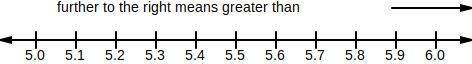
If the sign are both negative, then use whole number less than to to test the whole parts. If the test passes, then the decimal numbers themselves will be decimal greater than. For example, any negative decimal number with a whole part of 5 will be greater than any negative decimal number with a whole part of 6...
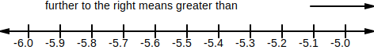
Otherwise, stop. It isn't greater than.
Check the fractional parts...
⚠️NOTE️️️⚠️
This is very similar to integer greater than. When the sign is negative, the number-line is mirrored.
If fractional parts are equal, stop. It isn't greater than.
⚠️NOTE️️️⚠️
It hasn't be discussed before, but greater than testing the fractional parts is similar to whole number, except the order in which positions are tested is reversed (index 0 is the most significant digit, index 1 is the second digit, index 2 is the third most significant digit, ...).
The code at the end of this section shows you how its done.
If the sign are both positive, then use fractional greater than to test the fractional parts. If the test passes, then the decimal numbers themselves will be decimal greater than. For example, any positive decimal number with a fractional part of .1 is greater than any decimal number with a fractional part of .01 ...
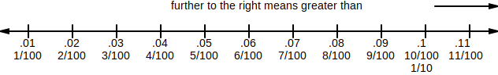
If the sign are both negative, then use fractional less than to test the fractional parts. If the test passes, then the decimal numbers themselves will be decimal greater than. For example, any negative decimal number with a fractional part of -.01 is greater than any decimal number with a fractional part of -.1 ...
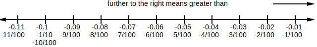
Otherwise, stop. It isn't greater than.
For example, to test if 312.12 < 312.02:
312.12 > 312.02 is true.
The way to perform this algorithm via code is as follows...
⚠️NOTE️️️⚠️
The first listing is the main DecimalNumber code, while the remaining listings are the code for fractional part called by the main DecimalNumber code.
arithmetic_code/DecimalNumber.py
python
#MARKDOWN_GT\s*\n([\s\S]+)\n\s*#MARKDOWN_GT
arithmetic_code/FractionalNumber.py
python
#MARKDOWN_LT\s*\n([\s\S]+)\n\s*#MARKDOWN_LT
arithmetic_code/FractionalNumber.py
python
#MARKDOWN_GT\s*\n([\s\S]+)\n\s*#MARKDOWN_GT
↩PREREQUISITES↩
Decimal number word conversion is the process of taking a decimal number and converting it to words. The algorithm used by humans to convert a decimal number to words is as follows:
Begin by converting the sign to a word. If the number is ...

⚠️NOTE️️️⚠️
Then, if the number isn't 0.0, ...

Then, count the number of digits in the fractional and write out the matching word...
| Count | Word |
|---|---|
| 1 | tenth |
| 2 | hundredth |
| 3 | thousandth |
| 4 | ten-thousandth |
| 5 | hundred-thousandth |
| 6 | millionth |
| 7 | ten-millionth |
| 8 | hundred-millionth |
| ... | ... |
If the fractional is more than 1 piece, append the letter s to the number being written out. For example, ...
{kt} \frac{1}{100} ⟶ one hundredth{kt} \frac{2}{100} ⟶ two hundredths{kt} \frac{3}{100} ⟶ three hundredths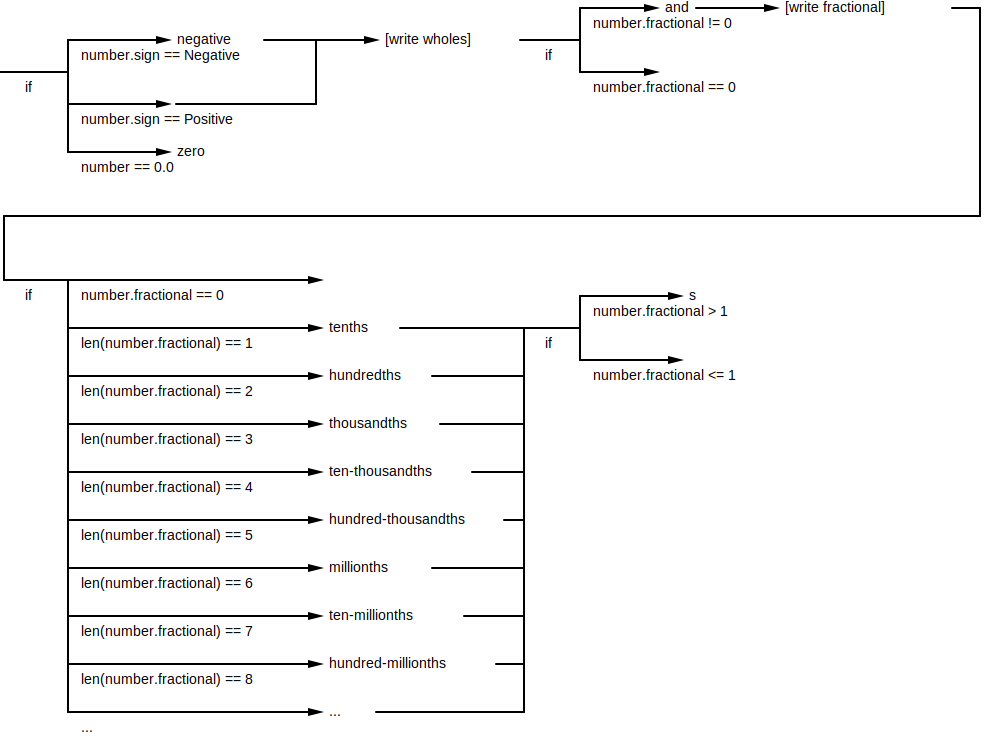
For example, the number...
{kt} - \frac{2}{10} ⟶ negative two tenths{kt} \frac{25}{100} ⟶ twenty five hundredths{kt} - 33 \frac{125}{1000} ⟶ negative thirty three and one hundred twenty five thousandths{kt} 2 \frac{0}{10} ⟶ two{kt} \frac{0}{10} ⟶ zeroThe way to perform this algorithm via code is as follows...
arithmetic_code/DecimalNumber.py
python
#MARKDOWN_TO_WORDS\s*\n([\s\S]+?)\n\s*#MARKDOWN_TO_WORDS
↩PREREQUISITES↩
Conceptually, you can think of decimal addition the same as fraction addition where the fraction is represented as a mixed number. However, rather than converting both numbers to a fraction and performing fraction addition, a more straight-forward algorithm exists.
The algorithms used by humans to perform decimal addition is essentially the same as vertical addition for whole numbers. To perform vertical addition for decimal numbers: stack the numbers on top of each other aligned by position and add each digit, carrying over when an overflow occurs. For example, adding 123.45 to 1.1...
{kt}\begin{alignedat}{6}{1}& \enspace{2}& \enspace{3}& \enspace{.}& \enspace{4}& \enspace{5}& \\{ }& \enspace{ }& \enspace{1}& \enspace{.}& \enspace{1}& \enspace{ }& \enspace + \\ \hline{1}& \enspace{2}& \enspace{4}& \enspace{.}& \enspace{5}& \enspace{5}&\end{alignedat}
⚠️NOTE️️️⚠️
Recall that empty positions are 0, so you can think of the 1.1 in the vertical addition example above as 001.10 .
This works for the fractional part just as it does for the whole part because the overflow from the fractional part bleeds into the whole part. For example, adding {kt} \frac{2}{100} to {kt} \frac{99}{100} results in the mixed number {kt} 1 \frac{1}{100}. That same operation done through vertical addition with equivalent decimal numbers produces the same result...
{kt} \frac{2}{100} ⟷ 0.02{kt} \frac{99}{100} ⟷ 0.99{kt} 1 \frac{1}{100} ⟷ 1.01{kt}\begin{alignedat}{6}{ }& \enspace{ }& \enspace{1}& \enspace{ }& \enspace{1}& \enspace{ }& \\{ }& \enspace{ }& \enspace{0}& \enspace{.}& \enspace{0}& \enspace{2}& \\{ }& \enspace{ }& \enspace{0}& \enspace{.}& \enspace{9}& \enspace{9}& \enspace + \\ \hline{ }& \enspace{ }& \enspace{1}& \enspace{.}& \enspace{0}& \enspace{1}&\end{alignedat}
Notice how if you were to remove the decimal point from the decimal numbers being added, the result would be the same as adding them with the decimal point and removing the decimal point from the result. For the 123.45 + 1.1 example above, ...
adding with decimal point...
{kt}\begin{alignedat}{6}{1}& \enspace{2}& \enspace{3}& \enspace{.}& \enspace{4}& \enspace{5}& \\{ }& \enspace{ }& \enspace{1}& \enspace{.}& \enspace{1}& \enspace{ }& \enspace + \\ \hline{1}& \enspace{2}& \enspace{4}& \enspace{.}& \enspace{5}& \enspace{5}&\end{alignedat}
adding without decimal point...
{kt}\begin{alignedat}{5}{1}& \enspace{2}& \enspace{3}& \enspace{4}& \enspace{5}& \\{ }& \enspace{ }& \enspace{1}& \enspace{1}& \enspace{ }& \enspace + \\ \hline{1}& \enspace{2}& \enspace{4}& \enspace{5}& \enspace{5}&\end{alignedat}
The decimal point can simply be placed in after the addition takes place: 12455 ⟶ 124.55.
Knowing this, a new vertical addition algorithm / implementation isn't needed. The inputs can be massaged (remove decimal point) so they work with the existing algorithm and the output can be massaged back (place in decimal point).
Since decimal numbers also have a sign, vertical addition can't be used if either number is negative. Rather, integer addition needs to be used. Integer addition makes use of whole number vertical addition but also accounts for the sign.
⚠️NOTE️️️⚠️
If you know about decimal multiplication and decimal division already, you're essentially counting the number of fractional digits for the number that has more fractional digits, then multiplying each number by 10 for that many iterations.
The results are guaranteed to have no fractional part, so you can use integer addition on them.
Once you've added, divide the result by 10 for the same number of iterations to get back the result as a decimal number.
The result is 124.55.
Multiplying by 10 shifts the decimal point to the right. Dividing by 10 shifts the decimal point to the left.
The way to perform this algorithm via code is as follows...
arithmetic_code/DecimalNumber.py
python
#MARKDOWN_ADD\s*\n([\s\S]+?)\n\s*#MARKDOWN_ADD
Conceptually, you can think of decimal subtraction the same as fraction subtraction where the fraction is represented as a mixed number. However, rather than converting both numbers to a fraction and performing fraction subtraction, a more straight-forward algorithm exists.
The algorithms used by humans to perform decimal subtraction is essentially the same as vertical subtraction for whole numbers. To perform vertical subtraction for decimal numbers: stack the numbers on top of each other aligned by position and subtract each digit, borrowing when necessary. For example, subtracting 1.1 from 123.45...
{kt}\begin{alignedat}{6}{1}& \enspace{2}& \enspace{3}& \enspace{.}& \enspace{4}& \enspace{5}& \\{ }& \enspace{ }& \enspace{1}& \enspace{.}& \enspace{1}& \enspace{ }& \enspace - \\ \hline{1}& \enspace{2}& \enspace{2}& \enspace{.}& \enspace{3}& \enspace{5}&\end{alignedat}
⚠️NOTE️️️⚠️
Recall that empty positions are 0, so you can think of the 1.1 in the vertical subtracting example above as 001.10 .
This works for the fractional part just as it does for the whole part because the carry over for the fractional part comes from the whole part. For example, subtracting {kt} \frac{2}{100} from the mixed number {kt} 1 \frac{1}{100} results in {kt} \frac{99}{100}. That same operation done through vertical subtraction with equivalent decimal numbers produces the same result...
{kt} 1 \frac{1}{100} ⟷ 1.01{kt} \frac{2}{100} ⟷ 0.02{kt} \frac{99}{100} ⟷ 0.99{kt}\begin{alignedat}{6}{ }& \enspace{ }& \enspace{0}& \enspace{ }& \enspace{9}& \enspace{11}& \\{ }& \enspace{ }& \enspace\cancel{1}& \enspace{.}& \enspace\cancel{0}& \enspace\cancel{1}& \\{ }& \enspace{ }& \enspace{0}& \enspace{.}& \enspace{0}& \enspace{2}& \enspace - \\ \hline{ }& \enspace{ }& \enspace{0}& \enspace{.}& \enspace{9}& \enspace{9}&\end{alignedat}
Notice how if you were to remove the decimal point from the decimal numbers being subtracted, the result would be the same as subtracting them with the decimal point and removing the decimal point from the result. For the 123.45 - 1.1 example above, ...
subtracting with decimal point...
{kt}\begin{alignedat}{6}{1}& \enspace{2}& \enspace{3}& \enspace{.}& \enspace{4}& \enspace{5}& \\{ }& \enspace{ }& \enspace{1}& \enspace{.}& \enspace{1}& \enspace{ }& \enspace - \\ \hline{1}& \enspace{2}& \enspace{2}& \enspace{.}& \enspace{3}& \enspace{5}&\end{alignedat}
subtracting without decimal point...
{kt}\begin{alignedat}{5}{1}& \enspace{2}& \enspace{3}& \enspace{4}& \enspace{5}& \\{ }& \enspace{ }& \enspace{1}& \enspace{1}& \enspace{ }& \enspace - \\ \hline{1}& \enspace{2}& \enspace{2}& \enspace{3}& \enspace{5}&\end{alignedat}
The decimal point can simply be placed in after the subtraction takes place: 12235 ⟶ 122.35.
Knowing this, a new vertical subtraction algorithm / implementation isn't needed. The inputs can be massaged (remove decimal point) so they work with the existing algorithm and the output can be massaged back (place in decimal point).
Since decimal numbers also have a sign, vertical subtraction can't be used if either number is negative. Rather, integer subtraction needs to be used. Integer subtraction makes use of whole number vertical subtraction but also accounts for the sign.
⚠️NOTE️️️⚠️
If you know about decimal multiplication and decimal division already, you're essentially counting the number of fractional digits for the number that has more fractional digits, then multiplying each number by 10 for that many iterations.
The results are guaranteed to have no fractional part, so you can use integer subtraction on them.
Once you've subtracted, divide the result by 10 for the same number of iterations to get back the result as a decimal number.
The result is 122.35.
Multiplying by 10 shifts the decimal point to the right. Dividing by 10 shifts the decimal point to the left.
The way to perform this algorithm via code is as follows...
arithmetic_code/DecimalNumber.py
python
#MARKDOWN_SUB\s*\n([\s\S]+?)\n\s*#MARKDOWN_SUB
↩PREREQUISITES↩
Conceptually, you can think of decimal multiplication the same as fraction multiplication where the fraction is represented as a mixed number. However, rather than converting both numbers to a fraction and performing fraction multiplication, a more straight-forward algorithm exists.
The algorithms used by humans to perform decimal multiplication is almost the same as vertical multiplication for whole numbers. To perform vertical multiplication for decimal numbers:
For example, to multiply 123.45 by 1.1, perform the multiplication without the decimal points...
{kt}\begin{alignedat}{6}{ }& \enspace{1}& \enspace{2}& \enspace{3}& \enspace{4}& \enspace{5}& \\{ }& \enspace{ }& \enspace{ }& \enspace{ }& \enspace{1}& \enspace{1}& \enspace * \\ \hline{ }& \enspace{1}& \enspace{2}& \enspace{3}& \enspace{4}& \enspace{5}& \\{1}& \enspace{2}& \enspace{3}& \enspace{4}& \enspace{5}& \enspace{ }& \enspace + \\ \hline{1}& \enspace{3}& \enspace{5}& \enspace{7}& \enspace{9}& \enspace{5}&\end{alignedat}
Then, place in the decimal point. Since 123.45 has 2 fractional digits and 1.1 has 1 fractional digit (2 + 1 = 3), the decimal point is placed in just before the digit at the 3rd position (starting from the left)...
{kt} 135.795
The vertical multiplication algorithm works because the ideas behind whole number multiplication are similar to the ideas behind decimal number multiplication:
Numbers represented in place-value notation can be broken down into single digit components -- the place of each digit in the number represents some portion of that number's value. For example, the number 123.45 can be broken down as ...
{kt} \frac{100}{1} ⟶ 1 * 100 ⟶ 100{kt} \frac{10}{1} ⟶ 2 * 10 ⟶ 20{kt} \frac{1}{1} ⟶ 3 * 1 ⟶ 3{kt} \frac{1}{10} ⟶ 4 * 0.1 ⟶ 0.4{kt} \frac{1}{100} ⟶ 5 * 0.01 ⟶ 0.05The multiplication of any two single digit components from rule 1 is equivalent to individually multiplying the single digit components and individually multiplying the fractional part, then multiplying the results together. For example, ...
{kt} \frac{1}{1} and 3 * {kt} \frac{1}{1} ⟶ 9 * {kt} \frac{1}{1} ⟶ 9.0{kt} \frac{1}{100} and 1 * {kt} \frac{100}{1} ⟶ 5 * {kt} \frac{1}{1} ⟶ 5.0{kt} \frac{100}{1} and 2 * {kt} \frac{10}{1} ⟶ 2 * {kt} \frac{1000}{1} ⟶ 2000.0{kt} \frac{1}{100} and 4 * {kt} \frac{1}{10} ⟶ 20 * {kt} \frac{1}{1000} ⟶ 0.020⚠️NOTE️️️⚠️
The numerator and denominator in the fractional parts both start with 1 followed by zero or more 0s. These fractional parts can be done quickly using a trick. If...
both numerators are followed by 0s, the resulting fraction will have as many 0s as both fractions.
e.g. {kt} \frac{10}{1} * {kt} \frac{100}{1} = {kt} \frac{1000}{1}
both denominators are followed by 0s, the resulting denominator will have as many 0s as both fractions.
e.g. {kt} \frac{1}{10} * {kt} \frac{1}{100} = {kt} \frac{1}{1000}
a numerator and a denominator both are followed by 0s, count the number of 0s in the one with less 0s and remove that many 0s from the other.
e.g. {kt} \frac{1}{10} * {kt} \frac{1000}{1} = {kt} \frac{100}{1}
e.g. {kt} \frac{100}{1} * {kt} \frac{1}{10} = {kt} \frac{10}{1}
Multiplication can be thought of as repetitive addition. However, unlike with whole numbers, decimal numbers have a fractional part that need to be accounted for. That fractional part represents a fraction of the number being iteratively added.
For example, 8 * 2.5 = 20 produces the same result as 8 + 8 + 8 * {kt} \frac{5}{10} = 20. 8 is added for 2 iterations, and then half of 8 is added (0.5 is equivalent to {kt} \frac{5}{10} which simplifies to {kt} \frac{1}{2}).
That same result (20) could have been produced from any number of different addition combinations:
Given these ideas, any two numbers can be multiplied by ...
For example, to multiply 123.45 by 1.1, begin by enumerating the single digit components of each number (idea 1)...
123.45 breaks down to...
{kt} \frac{100}{1} ⟶ 1 * 100 ⟶ 100{kt} \frac{10}{1} ⟶ 2 * 10 ⟶ 20{kt} \frac{1}{1} ⟶ 3 * 1 ⟶ 3{kt} \frac{1}{10} ⟶ 4 * 0.1 ⟶ 0.4{kt} \frac{1}{100} ⟶ 5 * 0.01 ⟶ 0.051.1 breaks down to...
{kt} \frac{1}{1} ⟶ 1 * 1 ⟶ 1{kt} \frac{1}{10} ⟶ 1 * 0.1 ⟶ 0.1Then, multiply the single digit components of 123.45 with the single digit components of 1.1...
multiply each single digit components of 123.45 by the 1.0 component of 1.1:
multiply each single digit components of 123.45 by the 0.1 component of 1.1:
Then, add the result of the multiplications in the previous step:
Notice how in the example, the multiplication of the least significant single digit component from both inputs produces the least significant single digit component in the output. That is, ...
The number of digits in the fractional part of the output will always be the total number of digits in the fractional parts of both inputs. The first input (123.45) has 2 fractional digits and the second input (1.1) has 1 fractional digit, so the output (135.795) is guaranteed to have 3 fractional digits.
This is the intuition behind the post-processing step in vertical multiplication where the decimal point is added back in:
For example, to multiply 123.45 by 1.1, perform the multiplication without the decimal points...
{kt}\begin{alignedat}{6}{ }& \enspace{1}& \enspace{2}& \enspace{3}& \enspace{4}& \enspace{5}& \\{ }& \enspace{ }& \enspace{ }& \enspace{ }& \enspace{1}& \enspace{1}& \enspace * \\ \hline{ }& \enspace{1}& \enspace{2}& \enspace{3}& \enspace{4}& \enspace{5}& \\{1}& \enspace{2}& \enspace{3}& \enspace{4}& \enspace{5}& \enspace{ }& \enspace + \\ \hline{1}& \enspace{3}& \enspace{5}& \enspace{7}& \enspace{9}& \enspace{5}&\end{alignedat}Then, place in the decimal point. Since 123.45 has 2 fractional digits and 1.1 has 1 fractional digit (2 + 1 = 3), the decimal point is placed in just before the digit at the 3rd position (starting from the left)...
{kt} 135.795
Since decimal numbers also have a sign, vertical multiplication can't be used if either number is negative. Rather, integer multiplication needs to be used. Integer multiplication makes use of whole number vertical multiplication but also accounts for the sign.
The way to perform this algorithm via code is as follows...
arithmetic_code/DecimalNumber.py
python
#MARKDOWN_MUL\s*\n([\s\S]+?)\n\s*#MARKDOWN_MUL
↩PREREQUISITES↩
Recall that all decimal numbers can be converted to fractions, but only some fractions can be converted to decimal numbers.
A fraction can be converted to a decimal number so long as it has a denominator that is 1 followed by zero or more 0s. For example, these fractions all have a denominator that make them suitable for conversion to decimal:
{kt} \frac{1}{1}{kt} \frac{15}{10}{kt} \frac{15}{100}{kt} \frac{21}{1000}Fractions that don't have a suitable denominator may be convertible to decimal numbers as well -- an equivalent fraction may exist with that has a suitable denominator. For the examples above, calculating their denominator's prime factors show that their prime factors can only include the numbers 2 and 5 in equal amounts. For example, ...
As such, any fraction that has the prime factors of none, 2, 5, or 2 and 5 has an equivalent fraction with a suitable denominator. To get to that equivalent fraction, there need to be an equal number of 2s and 5s in the prime factors of the denominator.
For example, the fraction {kt} \frac{1}{4} has a denominator of 4. 4 has the prime factors 2 and 2. If you were to multiply both the numerator and the denominator by 5*5, you would end up with a suitable fraction...
{kt} \frac{1}{4} \cdot \frac{5 \cdot 5}{5 \cdot 5} = \frac{25}{100}
{kt} \frac{25}{100} is an equivalent fraction to {kt} \frac{1}{4}. As such, both {kt} \frac{1}{4} and {kt} \frac{25}{100} convert to the decimal number 0.25.
The way to perform this algorithm via code is as follows...
arithmetic_code/DecimalNumber.py
python
#MARKDOWN_TO_SUITABLE_FRAC\s*\n([\s\S]+?)\n\s*#MARKDOWN_TO_SUITABLE_FRAC
↩PREREQUISITES↩
Conceptually, you can think of decimal division the same as fraction division where the fraction is represented as a mixed number. However, rather than converting both numbers to a fraction and performing fraction division, algorithms that are perform whole number division can be applied: trial-and-error division and long division.
In certain cases, decimal number division will result in a non-terminating decimal number. That is, the number will continue on forever. For example, {kt} 0.001 \div 3.0 = 0.00033333....
⚠️NOTE️️️⚠️
Another convention for showing a repeating decimal is to put a line over the portion that repeats: {kt} 0.001 \div 3.0 = 0.000\overline{3}.
The reason that a decimal divisions may result in non-terminating quotient relies on 3 ideas:
A fraction represents an unresolved integer division.
{kt} \frac{9}{15} is equivalent to {kt} 9 \div 15.{kt} \frac{1}{3} is equivalent to {kt} 1 \div 3.{kt} \frac{5}{25} is equivalent to {kt} 5 \div 25.When dividing, shifting the decimal point in the numerator and denominator by equal amounts doesn't change the quotient.
{kt} 2500.0 \div 500.0 = 5.0{kt} 250.0 \div 50.0 = 5.0{kt} 25.0 \div 5.0 = 5.0{kt} 2.5 \div 0.5 = 5.0{kt} 0.25 \div 0.05 = 5.0{kt} 0.025 \div 0.005 = 5.0Decimal numbers are a way of representing fractions where the denominator is 1 possibly followed by 0s.
{kt} \frac{2}{1} ↔ 2.0{kt} \frac{29}{10} ↔ 2.9{kt} \frac{209}{100} ↔ 2.09{kt} \frac{2009}{1000} ↔ 2.009In the example above, to determine if the quotient is a non-terminating decimal, begin by shifting the decimal point in both the dividend and the divisor until both are integers (idea 2):
{kt} 0.001 \div 3.0{kt} 0.01 \div 30.0{kt} 0.1 \div 300.0{kt} 1.0 \div 3000.0Now that both the dividend and divisor are integers (no fractional part), convert the division operation to a fraction (idea 1):
{kt} 1 \div 3000 is equivalent to {kt} \frac{1}{3000}If {kt} \frac{1}{3000} were representable as a decimal number, either it or an equivalent fraction would have a denominator of 1 possibly followed by 0s (idea 3):
{kt} \frac{1}{3000}'s denominator doesn't meet this criteria.{kt} \frac{1}{3000}'s equivalent fractions don't have a denominator that meets this criteria.Rather than going through all possible equivalent fractions, a quicker way to check for a non-terminating quotient is to simplify it and list out the simplified denominator's prime factors: if the prime factors ...
... then an equivalent fraction exists where the denominator is 1 possibly followed by 0s (idea 3). For example, {kt} \frac{4}{200} simplifies to {kt} \frac{1}{50}. The prime factors of 50 are 2*5*5, so it does terminate. That is, an equivalent fraction exists where the denominator of 1 possibly followed by 0s (idea 3).
The key insight behind this is that if you were to take a fraction where the denominator is 1 possibly followed by 0s (idea 3), listing out the prime factors of its denominator always results in the primes 2 and 5 in equal amounts. For example, ...
{kt} \frac{1}{1} has a denominator of 1: 1 = (empty) (0 of each){kt} \frac{15}{10} has a denominator of 10: 10 = 2*5 (1 of each){kt} \frac{15}{100} has a denominator of 100: 100 = 2*2*5*5 (2 of each){kt} \frac{21}{1000} has a denominator of 1000: 1000 = 2*2*2*5*5*5 (3 of each)As such, any fraction that has the prime factors of nothing, only 2s, only 5s, or only 2s and 5s has an equivalent fraction with a suitable denominator. To get to that equivalent fraction, there need to be an equal number of 2s and 5s in the prime factors of the denominator. For the example above, the fraction {kt} \frac{1}{50} has a denominator of 50. 50 breaks down to the prime factors of 2*5*5. If you were to multiply both the numerator and the denominator by 2, you would end up with an equivalent fraction that has a suitable denominator...
{kt} \frac{1}{50} \cdot \frac{2}{2} = \frac{2}{100} = 0.02
{kt} \frac{2}{100} has a denominator of 100: 100 = 2*2*5*5 (2 of each).
The way to perform this algorithm via code is as follows...
arithmetic_code/DecimalNumber.py
python
#MARKDOWN_DIVTERM_TEST\s*\n([\s\S]+?)\n\s*#MARKDOWN_DIVTERM_TEST
Conceptually, the idea behind a non-terminating decimal is that the underlying fraction can't be represented in pieces of 1, 10, 100, 1000, etc.. As such, the decimal number keeps breaking up into smaller and smaller pieces in an effort to reach that underlying fraction, but ultimately never getting there. For example, representing the fraction {kt} \frac{1}{3} as a fraction where the denominator is 1 possibly followed by 0s (idea 3) is impossible. The fraction {kt} \frac{1}{3} (represented as non-terminating decimal number 0.333...) is visualized as...
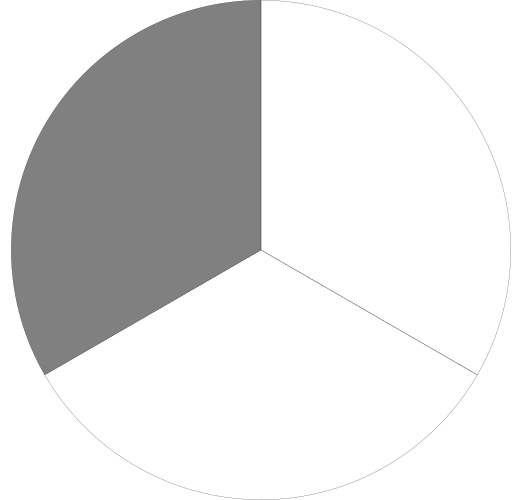
With 10 parts, the closest you can get is {kt} \frac{3}{10} (represented as decimal number 0.3)...
With 100 parts, the closest you can get is {kt} \frac{33}{100} (represented as decimal number 0.33)...

With 1000 parts, the closest you can get is {kt} \frac{333}{1000} (represented as decimal number 0.333)...

The further you go, the closer you will get to {kt} \frac{1}{3}. But, you'll never fully reach {kt} \frac{1}{3}:
{kt} \frac{3}{10} \lt \frac{1}{3} (0.3 < 0.333...){kt} \frac{33}{100} \lt \frac{1}{3} (0.33 < 0.333...){kt} \frac{333}{1000} \lt \frac{1}{3} (0.333 < 0.333...)The same concept as trial-and-error division for whole numbers can be applied to trial-and-error division for decimal numbers. The only differences are that for a decimal number, the...
For example, to find the quotient for 11 / 2 = ?, test to see 2 * ? = 11...
Selecting a starting test number is similar to selecting a starting test number for whole number division, but with an exception: If input1 is less than 1 but product isn't, you can reasonably guess that the maximum number of whole digits in input2 is the number of fractional digits in input1 added to the number of whole digits in product:
len(input1.fractional.digits) + len(product.whole.digits) <= len(input2.whole.digits).
if input1 < 1.0 and product >= 1.0: # special case logic
in1_len = len(input1.fractional.digits)
in2_len = len(input2.whole.digits)
product_len = len(product.whole.digits)
condition = in1_len + product_len <= in2_len
assert condition
else: # existing logic from whole number division
in1_len = len(input1.whole.digits)
in2_len = len(input2.whole.digits)
product_len = len(product.whole.digits)
condition1 = in1_len + in2_len == product_len
condition2 = in1_len + in2_len == product_len + 1
assert condition1 or condition2
Once a starting test number has been selected, the algorithm proceeds similarly to whole number trial-and-error division: maintain a pointer to an position in the test number which it uses to increment / decrement the digit at that position. The only differences are that...
input1 is negative and product is negative, pick the same number and keep it non-negative.input1 is negative but product is non-negative, pick the same number but makes it negative.input1 is non-negative but product is negative, pick the same number but makes it negative.The one caveat with having the algorithm dive into the fractional part is that a division operation may result in a fractional part that never terminates: a non-terminating decimal. In such a case, the algorithm never finishes because the expected product can't be reached.
For example, imagine performing the algorithm for 1.0 / 3.0 = ?. That is, find the missing number for 3.0 * ? = 1.0.
The number required to solve the multiplication 3.0 * ? = 1.0 can't be represented as a decimal. That number is {kt} \frac{1}{3}: 3.0 * {kt} \frac{1}{3} = 1.0.
The workaround to non-terminating decimals is to either ...
This is discussed in more depth in the non-terminating decimal section.
arithmetic_code/DecimalNumber.py
python
#MARKDOWN_DIVTE\s*\n([\s\S]+?)\n\s*#MARKDOWN_DIVTE
The algorithm used by humans to perform decimal division is almost the same as long division for whole numbers. The key differences are:
The divisor must be a whole number.
If the divisor isn't a whole number, multiply both the dividend and divisor by 10 until the divisor loses its fractional part. Multiplying a decimal number by 10 shifts its decimal point to the right. For example, ...
The position of the decimal point in the quotient is the same as the position of the decimal point in the dividend.
Place the decimal point in the quotient prior to performing the division. For example, 0.5 / 15 ...
{kt}\begin{array}{l}\phantom{{{15}\smash{)}}}{{\phantom{0} {.}\phantom{5}}} \\{{15}}\overline{\smash{)}{ {0} {.} {5}}} \\\end{array}
If you run out of digits to pull down from the dividend but the remainder isn't 0, you keep going.
Continue to pull down 0s from the end of the fractional part until a subtraction results in 0. For example...
{kt}\begin{array}{l}\phantom{{{4}\smash{)}}}{{ {1} {.} {2}}} \\{{4}}\overline{\smash{)}{ {3} {.} {0}}} \\\phantom{{{4}\smash{)}}}{\underline{{0} }} \\\phantom{{{4}\smash{)}}}{ {3}\phantom{.} {0}} \\\phantom{{{4}\smash{)}}}{\underline{{2}\phantom{.} {2}}} \\\phantom{{{4}\smash{)}}}{\underline{{2}\phantom{.} {2}}} \\\end{array}
For example,
relies of 4 key ideas:
Multiplying any decimal number by 10 will shift the decimal point 1 position to the right.
For example...
If you multiply by 10 enough times the number becomes an integer because the fractional part gets removed -- it becomes 0. For example, 12.34 has 2 digits in its fractional part...
Any decimal number can be represented as a fraction.
For example, 1.52 can be represented as {kt} \frac{152}{100}.
A fraction that has its numerator and denominator multiplied by the same number will have the same value.
To divide any two decimal numbers, ...
For example, to divide 1.5 by 0.5, begin by multiplying both inputs by 10 until neither are decimals:
Then, divide them as integers...
TODO: long division where you shift the divisor and dividend until there is no fractional part, then divide as is... e.g. 0.1 / 0.3 is the result result as 1 / 3 is the same result as 10/30 -- but, you only really need to shift until the divisor is whole, just keep the decimal point in the same place and it'll still work out
TODO: show by converting to fractions
TODO: show using standard long division algorithm (only works if denominator is an integer) -- if not need to scale up e.g. 10/5.2 needs to be scaled to equiv frac of 100/52 and then perform using the standard long division algo
TODO: divide by 10 to move digits down
↩PREREQUISITES↩
Decimal rounding is the process of making a decimal number less exact. Rounding is often used in an attempt to make numbers more convenient at the expense of being less accurate. For example, it's acceptable to say 330 million people live in the USA even though it very likely isn't the exact number of people.
To round a decimal number, ...
For example, to round 123.456 at the tenths position...
locate the tenths position...
is the position immediately following the tenths greater than or equal to 5?
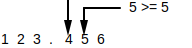
yes, the hundredths position is greater than or equal to 5, so increment at the tenths position...
123.456 + 000.100 = 123.556
set all digits following the tenths to 0...
123.500 (can be shortened to 123.5)
The way to perform this algorithm via code is as follows...
arithmetic_code/DecimalNumber.py
python
#MARKDOWN_ROUND\s*\n([\s\S]+?)\n\s*#MARKDOWN_ROUND
↩PREREQUISITES↩
Recall that a decimal number is another way of representing a mixed number where the denominator is 1 followed by trailing 0s. For example, ...
{kt} 2 \frac{9}{10} ↔ 2.9{kt} 7 \frac{9}{100} ↔ 2.09{kt} 2 \frac{9}{1000} ↔ 2.009{kt} 2 ↔ 2.0 (2 is equivalent to {kt} 2 \frac{0}{10})If a mixed number doesn't have a denominator that qualifies, it may still be convertible to a decimal number so long as an equivalent fraction exists where the denominator does qualify. That is, an equivalent fraction exists where the denominator is 1 followed by trailing 0s. For example, ...
{kt} 5 \frac{2}{5} can be converted because {kt} \frac{4}{10} is an equivalent fraction.{kt} 5 \frac{10}{20} can be converted because {kt} \frac{5}{10} is an equivalent fraction.To figure out if a suitable equivalent fraction exists for a conversion, simplify the fraction and get the prime factors of its denominator. As long as those prime factors contain no numbers other than 2 and 5, there is a suitable equivalent fraction available. For example, {kt} \frac{9}{180} is suitable because it simplifies to {kt} \frac{1}{20}, where the denominator (20) has the prime factors of [2, 2, 5].
If a suitable equivalent fraction does exist, that suitable equivalent fraction can be determined by...
For example, to find the proper equivalent fraction for {kt} 5 \frac{10}{20}, begin by taking the denominator and finding the next largest value that's 1 followed by trailing 0s. Since the number of digits in the denominator is 2, the next largest value that's 1 followed by 2 trailing 0s: 100.

Then, divide 100 by 20. This gives back 5, the value you need to multiply 20 by to get it to 100...
{kt} 100 \div 20 is 5
Then, multiply both the numerator and denominator by 5 to get the proper equivalent fraction...
{kt} 5 \frac{10}{20} \cdot \frac{5}{5} is {kt} 5 \frac{50}{100}
arithmetic_code/DecimalNumber.py
python
#MARKDOWN_TO_SUITABLE_FRAC\s*\n([\s\S]+?)\n\s*#MARKDOWN_TO_SUITABLE_FRAC
TODO: talk about terminating vs non-terminating decimals -- non-terminating decimals can be explained by the explaination in the place value system of the fractional part
TODO: talk about terminating vs non-terminating decimals -- non-terminating decimals can be explained by the explaination in the place value system of the fractional part
TODO: talk about terminating vs non-terminating decimals -- non-terminating decimals can be explained by the explaination in the place value system of the fractional part
TODO: talk about terminating vs non-terminating decimals -- non-terminating decimals can be explained by the explaination in the place value system of the fractional part
TODO: talk about terminating vs non-terminating decimals -- non-terminating decimals can be explained by the explaination in the place value system of the fractional part
TODO: talk about terminating vs non-terminating decimals -- non-terminating decimals can be explained by the explaination in the place value system of the fractional part
TODO: talk about terminating vs non-terminating decimals -- non-terminating decimals can be explained by the explaination in the place value system of the fractional part
TODO: talk about terminating vs non-terminating decimals -- non-terminating decimals can be explained by the explaination in the place value system of the fractional part
TODO: talk about terminating vs non-terminating decimals -- non-terminating decimals can be explained by the explaination in the place value system of the fractional part
TODO: talk about terminating vs non-terminating decimals -- non-terminating decimals can be explained by the explaination in the place value system of the fractional part
TODO: talk about terminating vs non-terminating decimals -- non-terminating decimals can be explained by the explaination in the place value system of the fractional part
TODO: talk about terminating vs non-terminating decimals -- non-terminating decimals can be explained by the explaination in the place value system of the fractional part
TODO: talk about terminating vs non-terminating decimals -- non-terminating decimals can be explained by the explaination in the place value system of the fractional part
TODO: talk about terminating vs non-terminating decimals -- non-terminating decimals can be explained by the explaination in the place value system of the fractional part
TODO: talk about terminating vs non-terminating decimals -- non-terminating decimals can be explained by the explaination in the place value system of the fractional part
Recall that a decimal number is another way of representing a mixed number where the denominator is 1 followed by trailing 0s. For example, ...
{kt} 2 \frac{9}{10} ↔ 2.9{kt} 7 \frac{9}{100} ↔ 2.09{kt} 2 \frac{9}{1000} ↔ 2.009{kt} 2 ↔ 2.0 (2 is equivalent to {kt} 2 \frac{0}{10})To write a decimal number as a mixed number, ...
For example, to convert the mixed number {kt} 22.018 to a decimal number, begin by counting the number of digits after the decimal point and then adding a denominator starting with a 1 followed by that many 0s...
{kt} 22.\frac{018}{1000}
Then, remove any prefixed 0s on the numerator...
{kt} 22.\frac{18}{1000}
Then, remove the decimal point...
{kt} 22 \frac{18}{1000}
arithmetic_code/DecimalNumber.py
python
#MARKDOWN_AS_FRAC\s*\n([\s\S]+?)\n\s*#MARKDOWN_AS_FRAC
Examples of mixed number and decimal number equivalents...
{kt} 1 \frac{117}{1000} ↔ 1.117{kt} 2 \frac{9}{1000} ↔ 2.009{kt} 7 \frac{9}{100} ↔ 7.09{kt} 5 \frac{9}{10} ↔ 5.9